MLsys
学习资源：
MLsys
先看一篇入门好文： AI-Infra 总览：构建支撑大规模训练与推理基础设施平台
我们来看看一个完整的 AI Infra 的架构分别都有什么：

AI 硬件体系架构
AI 计算体系
我们先来一句结论： Key Operations is multiply and accumulate($\text{MAC}$) (> 90% computation)
我们定义一个标准的 $\text{MAC}$ 操作为:
- $\text{MAC} = (\text{操作数}_1 \times \text{操作数}_2) + \text{累加器}$
乘积累加操作的重要性显而易见，无论是矩阵求和，还是我们在计算每一个神经元输出时的 $w_1·x_1 + w_2·x_2 + w_3·x_3 + …$ 时，所用到的都是乘积累加操作。
整体看看 AI or 深度学习计算模式：经典模型结构和轻量化模型结构、模型量化和剪枝到大模型分布式并行，从而理解“计算”需要什么？
AI 三大范式编程
监督学习，无监督学习和强化学习

通过AI芯片关键指标，了解一块AI芯片要更好的支持“计算”，需要关注哪些重要工作；从而引出峰值算力与带宽之间的关系？
算力单位
-
$\text{OPS}$
-
$\text{OPS}$(Operations Per Second) 指每秒计算次数， $1 \text{TOPS}$ 代表每秒进行一万亿($10^{12}$)次计算
-
$\text{OPS/}W$ 指每瓦特运算性能，$\text{TOPS/}W$ 常用来衡量在 1$W$ 功耗下的计算效率
-
-
$\text{MACs}$
- Multiply-Accumulate Operations，乘积累加操作次数，通常 $\text{MACs} = 1次乘法+1次加法 \approx 2 \text{FLOPs}$
-
$\text{FLOPs}$
- Floating Point Operations,浮点运算次数，用来衡量模型计算的复杂度
最后我们通过深度学习的计算核心“矩阵乘”来看对“计算”的实际需求和情况，为了提升计算性能、降低功耗和满足训练推理不同场景应用，对“计算”引入TF32/BF16等复杂多样的比特位宽
矩阵运算
传统的卷积运算，不太好分块进行并行化来优化性能，所以我们一般会将卷积 Conv 转换成 矩阵乘 MM:

实际中，我们会使用矩阵分块（Tiling） 优化，核心思想就是把大矩阵拆成小块，让每一块刚好能放进高速缓存（Cache）里，从而实现数据重用，用 “空间”（Cache 容量）来换取 “时间”（减少内存访问）：

比特位宽

芯片基础
性能指标
计算强度
首先我们来看看什么是计算强度：
$$ \text{Required Compute Intensity} = \frac{\text{算力}}{\text{带宽}} $$假设我们 CPU 的计算能力是 $2000$ $\text{GFLOPS}$ FP64，数据带宽为 $200 \ \text{GB/s}$，那么此时系统中的计算强度等于 $\frac{2000}{200/8} = 80$（除以 8 是因为 FP64 每个数占 8 字节）。这意味着：理论上每加载一次数据后，需要对其进行 $80$ 次计算，才能让算力与带宽恰好达到平衡。
这里我们可以理解为如果带宽很高，然后我们的算力比较小，那么计算就跟不上带宽。这个计算强度的结果代表着每字节数据做多少次浮点运算。
所需线程数
$$ \text{Threads Required} = \frac{\text{带宽} \times \text{时延} }{\text{单次请求数据量}} $$这里我们可以从两个角度来理解这个公式：
首先我们从带宽角度：
由于内存时延较高，单个线程发出请求后需要等待较长时间才能拿到数据。如果只有少量线程在发请求，内存总线在大部分时间里是空闲的，带宽被浪费。我们需要计算：同时需要多少个请求在飞（in-flight），才能把内存带宽塞满？ 带宽被塞满后，每个周期都有数据返回，GPU 自然不会空转。
我们也可以从计算角度来理解：
由于内存时延较高，为了让芯片不空转、每时每刻都有数据可以处理，我们需要计算：到底需要多少个并发线程？
例如 Intel Xeon 8280，它的内存带宽为 $131 \ \text{GB/s}$，内存时延是 $89 \ \text{ns}$，那么理论上传输时延这段时间里我们可以传输 $11,659$ Bytes。假设我们这里进行的操作是标准的 $\text{MAC}$ 操作，每次只传输两个数 x 和 y，计算一个 y[i] = alpha * x[i] + y[i]，alpha 是一个固定值，因此每个线程每次处理的数据量是 $16$ B，那么如果我们想数据传输的过程中，我们能一直在计算，这时候就可以使用多个线程进行并发。其实这个有点像那个 CPU 中的流水线指令调度一样。
|
|
那么理论上我们需要 $\frac{11659}{16} = 729$ 个线程才可以用满这里的带宽时延
你可能会有这样的疑问: 这里为什么要用多线程呢？难道就不能一个线程连轴转？也就是比如一个线程的寄存器空间有 $256$ kb，然后可以一直往这个寄存器内打数据啊，然后一个线程不停的消费，反正传输时延只在一开始有一次消耗，后面的数据都是一块过来的，消费完继续用不就行了。甚至如果对单次请求的数据进行的计算正好符合计算强度，那不是一个线程就能完美使用了？
这个想法有一个误区，就是一开始执行的时候不一定知道要请求多少数据啊，很可能请求的数据是得计算完成之后才知道，因此每一次请求都会有一个单独的传输时延。因此得靠多线程组成一个类似于流水线，才能保证每次起码有一个 warp 在执行，芯片没有空转
CPU
无论现在 CPU 具体实现怎么变，依旧是由运算器、控制器、寄存器三大部分组成
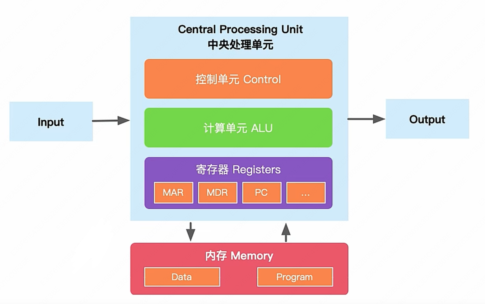
我们来看一个普通的程序 demo：
|
|
可以看到，循环控制、地址计算等大量工作都由控制器负责，因此实际上： CPU 真正擅长的是逻辑控制，而非密集计算。
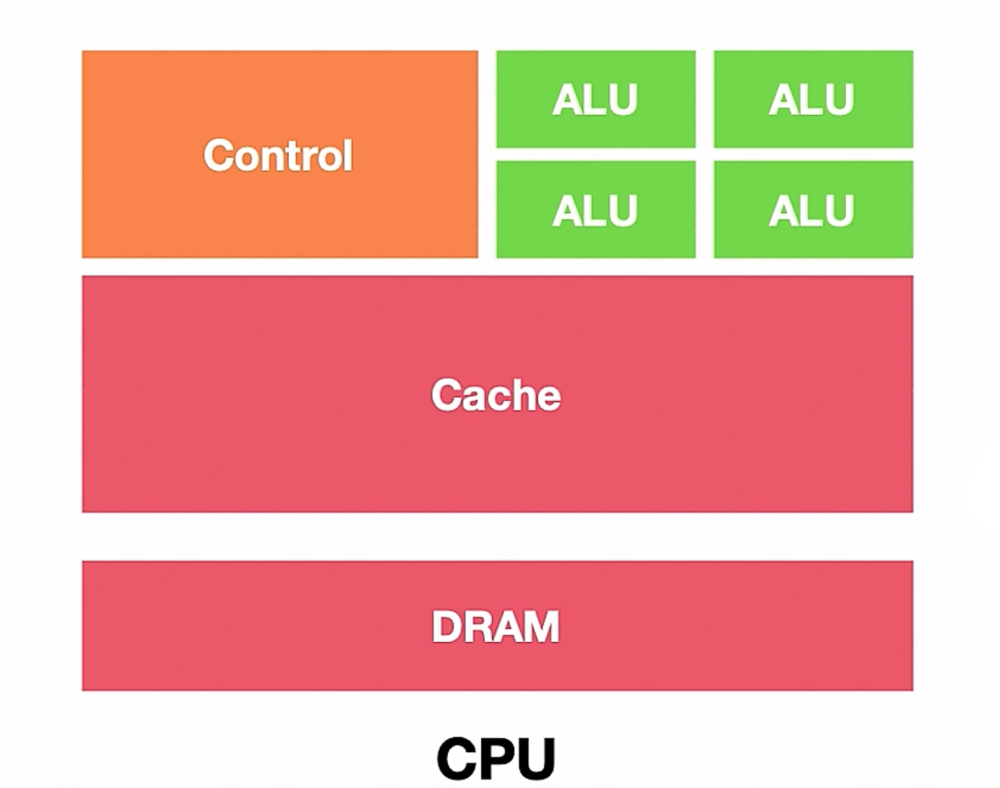
因此对于计算密集型的场景， CPU 这种通用结构便力不从心了。CPU 的所有模块，从本质上说都是为了保证指令能一条一条地顺序执行而设计的，所以衡量 CPU 性能的指标是主频（单位时间内执行的指令条数），而不是我们之前提到的 $\text{TOPS}$ （单位时间内的计算次数）。
并行处理硬件架构
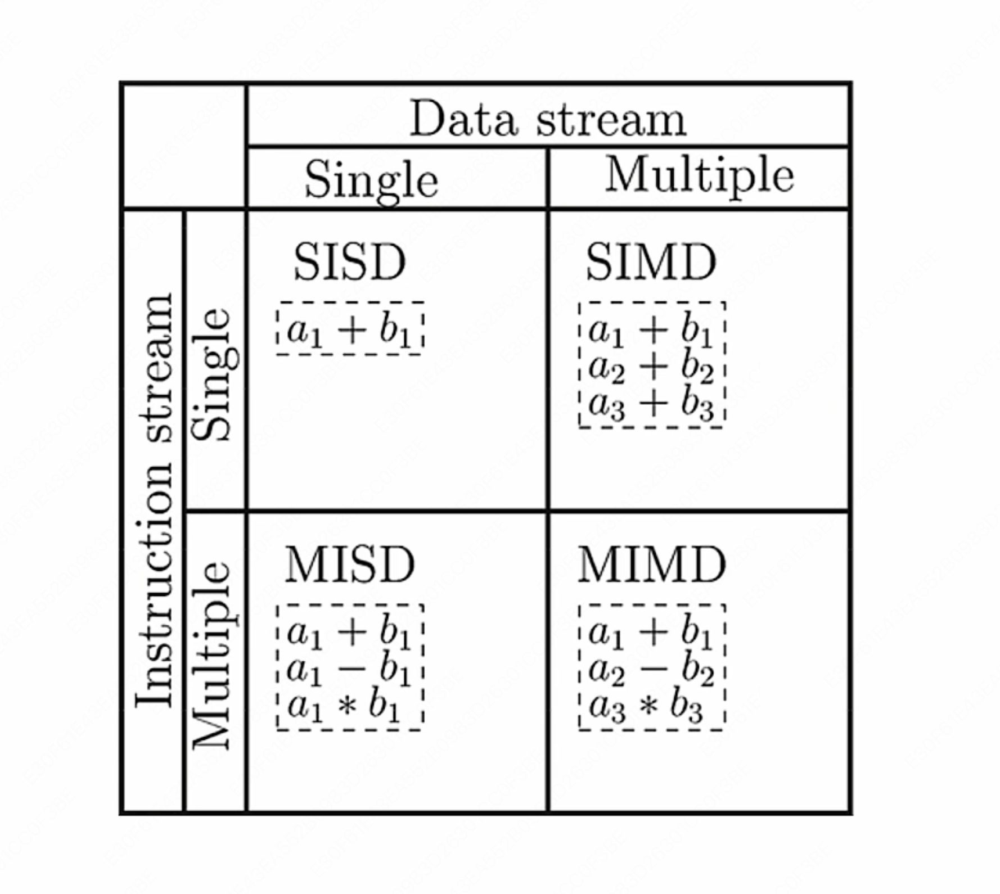
这里的指令流可以理解为一次能执行多少种不同运算，数据流可以理解为能同时处理多少份数据。
- SISD（单指令流单数据流）:
- 每个指令部件每次仅译码一条指令，而且在执行时仅为操作部件提供一份数据。
- 就是最原始的串行计算方式，完全无法并行计算。在一个时钟周期内，CPU只能处理一个数据流。
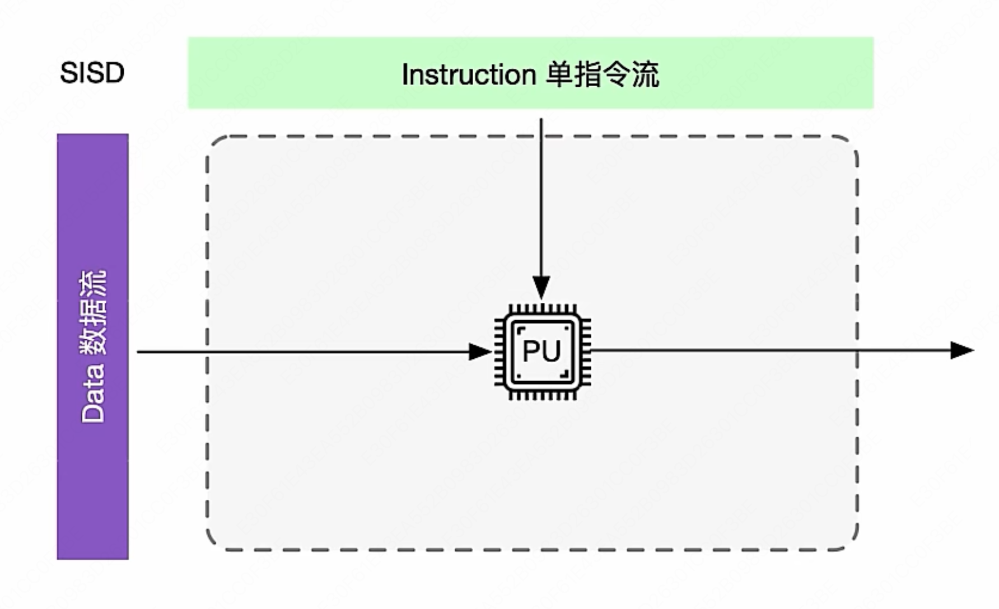
- SIMD(单指令流多数据流)： 现在用的最多的架构，现在的 Intel 和 AMD 的 CPU 也都是这种
- 一个控制器控制多个处理器，同时对一组数据中的每一个分别执行相同的指令操作。
- SIMD 主要执行向量、矩阵等数组运算，处理单元数目固定，适用于科学计算。
- 特点就是处理单元(PU)数量很多，但是处理单元的速度会受到通讯带宽的限制(因为读取数据是性能瓶颈)
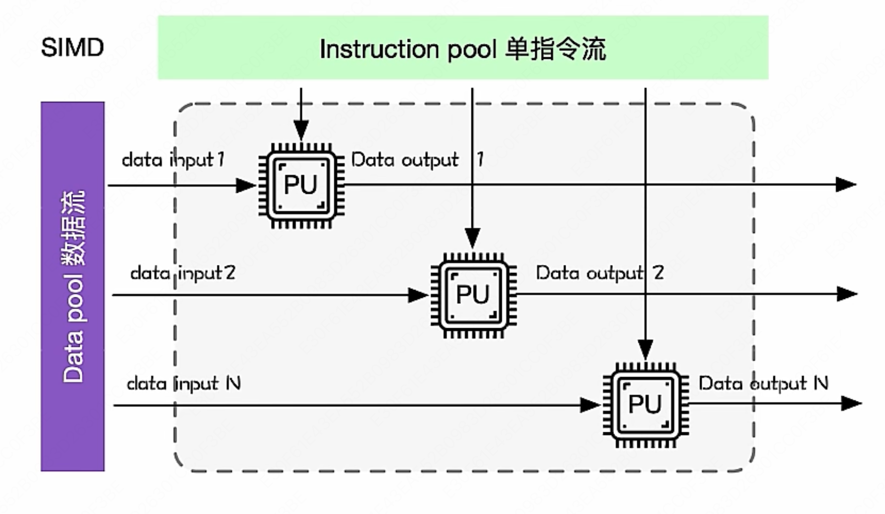
- MISD(多指令流单数据流)：作为理论模型出现，没有投入实际的应用之中
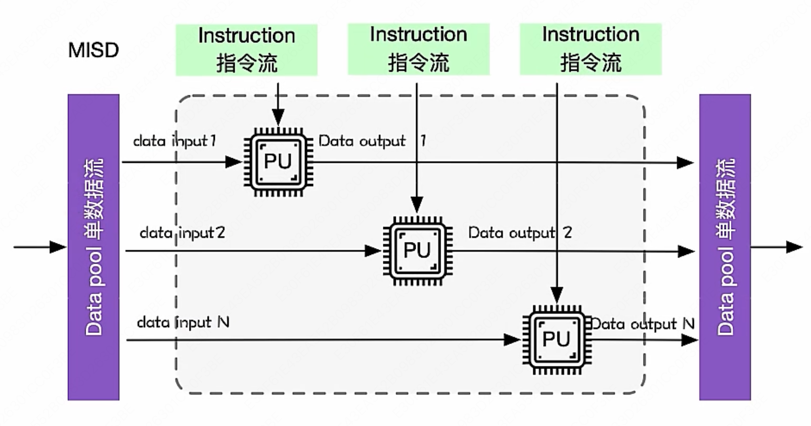
- MIMD(多指令流多数据流)：是现代多核CPU和分布式系统的基础，使用非常广泛
- 在多个数据集上执行多个指令
- 分为共享内存 MIMD 和分布式内存 MIMD

- SIMT(单指令流多线程)： 这是一种和 SIMD 类似的架构，也就是现在 GPU 的主流架构
- 能高效地管理和执行大量单线程，允许同一条指令对多份数据分别寻址并独立执行。
- SIMT 允许每个线程有独立的程序计数器，可以走不同的执行路径（分支），而 SIMD 不行。
- 可以并行执行非常非常多的线程
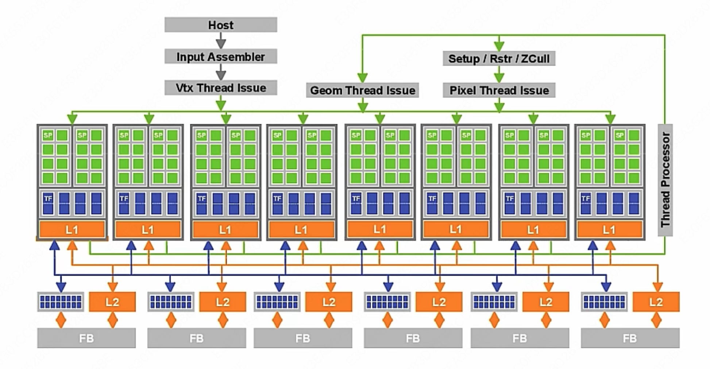
ISA
用来区分 CPU 的标准是指令集架构 (Instruction Set Architecture， 简称 ISA)。
开发人员基于指令集架构，使用不同的处理器硬件实现方案，来设计不同性能的处理器。
基本分类：
- 运算指令： 在 ALU 中执行的计算操作（AI 专用芯片会专门支持一些特殊的运算指令，这些指令会计算的非常快）
- 数据移动指令： 读写存储操作（包括寄存器的读写）
- 控制指令： 更改指令执行顺序，进行程序跳转，实现 if/else，循环等
ISA 架构
然后 ISA 指令集还分为两种不同的架构：
-
CISC 架构：
- 复杂指令集。计算机上的 CPU 基本都是 CISC 架构。有大量的指令，导致 CPU 的设计变得极其复杂。
- 但是好处是对一些专用的命令速度会非常快，因为直接是硬件支持了，而不是像 RISC 架构一样需要用多条指令来拼凑。
-
RISC 架构：
- 精简指令集。移动设备上的 CPU 基本都是 RISC 架构。
- 只包含处理器常用的指令
ISA 种类
CPU 于上世纪 60 年代问世，已发展几十年，已经有几十种不同的指令集相继诞生或者消亡
| 指令集架构 | 描述 | 公司 |
|---|---|---|
| X86 | CISC 架构个人计算机的标准处理器架构 | Intel/AMD |
| ARM | 32 位和 64 位 RISC 系列声名显赫，无处不在 | ARM |
| RISC-V | 完全开放的指令集，源自名校，兴于开源 | RISC-V 基金会 |
| SPARC | 高性能 RISC 架构的代表，针对服务器领域设计 | Sun |
| Power | RISC 架构高性能领域优势明显，应用于高端服务器 | IBM |
| ARC | 32 位 RISC 架构，以极高的能效比见长 | Synopsys |
| MIPS | 简洁优化 RISC 架构，广泛用于嵌入式设备及消费领域，仅次于 ARM | / |
| Alpha | 64 位 RISC 架构处理器，多应用于企业级服务器，但价格高昂，部署困难，淡出市场 | / |
计算时延模型
首先我们来看看什么是计算强度：
$$ \text{Required Compute Intensity} = \frac{FLOPS}{Data \ Rate} $$假设我们 CPU 的计算能力是 $2000$ $\text{GFLOPS}$ FP64，数据带宽为 $200 \ \text{GB/s}$，那么此时系统中的计算强度等于 $\frac{2000}{200/8} = 80$（除以 8 是因为 FP64 每个数占 8 字节）。这意味着：理论上每加载一次数据后，需要对其进行 $80$ 次计算，才能让算力与带宽恰好达到平衡。
还记得我们上次提到的那个程序 demo 吗？
|
|
这里面涉及到一次乘积累加操作(MAC)，它的指令流程如下：

显然，在这个指令执行过程中，内存时延是性能瓶颈。我们可以简单地来算几个数据就知道了：
$$ \begin{align} \text{光的速度} &= 300,\!000,\!000 \ m/s \\ \text{时钟周期} &= 3,\!000,\!000,\!000 \ hz \\ \text{电流速度} &= 60,\!000,\!000 \ m/s \end{align} $$所以最理想的情况下，一个时钟周期内，光可以传播 $10 \ cm$，而电流在硅基芯片中传播速度要慢一点，只能传播约 $2 \ cm$
而我们假设设备配置如下：

那么我们从内存读取数据，最理想的情况下，时延也有 $5∼6$ 个时钟周期了，而由于现在 CPU 的性能过剩，一个时钟周期可以进行很多次计算，因此时延问题成为了我们系统的瓶颈。
实际测试中数据如下：
对于 Intel Xeon 8280，它的内存带宽为 $131 \ \text{GB/s}$，内存时延是 $89 \ \text{ns}$，那么理论上我们可以传输 $11,659$ Bytes 在 $89 \ \text{ns}$ 里。
但是我们刚刚的一次 MAC 而言，我们只传输了 x[i] 和 y[i]，一共 $16$ Bytes，只因此在这 $89 \ \text{ns}$ 内，内存利用率只有可怜的 $0.14\%$!
但是更恐怖的是，没有最低，只有更低:

这 $0.14\%$ 一对比发现好像利用率还很高啊！这里的 GPU 的利用率更低，原因在于 GPU 擅长对同一批数据做大量复杂计算（高算术强度），而非像这里每次取完数据只做一次 MAC 这种低强度场景。
GPU
这里我们对 GPU 的讲解都是对 NVIDIA 的 GPU 进行分析，下面不再赘述。
GPU 的设计目标是最大化吞吐量，更关心的是并行度——即同时能执行多少任务；而 CPU 则更注重降低延迟与提升并发能力。
还是回到上面的 demo 的例子，虽然单次我们只请求了 x[i] 和 y[i]，一共 $16$ Bytes，内存效率非常低
比如对于上面表格中的 Intel Xeon 8280，理论上一次传输时延的时间里我们可以传输 $11,659$ Bytes，理论上我们需要一次做 $\frac{11659}{16} = 729$ 次计算才可以用满这里的带宽时延
Q. 我们该如何进行优化呢？
首先最直接的想法就是试试增加并发度。
我们可以将上面的 demo 的循环进行展开：
|
|
此时就可以利用上我们之前提到的 SIMD(单指令流多数据流)架构，一条指令就可以同时处理多个数据。
但是问题也很明显，哪怕我们不断地对 CPU 做优化，依旧无法让单个线程单个指令直接处理这 $729$ 个计算负荷啊
既然单线程能力有限，自然会想到：能否用多个线程同时计算，将带宽时延"吃满"？这正是所谓的并行计算。
也就是将上面的 demo 修改为：
|
|
此时情况不一样了：
- 每个线程独立的负责相关计算
- 一共需要 $729$ 个线程
这也就是 GPU 的 SIMT(单指令流多线程)架构在干的事情
我们来看看主流的芯片分别支持多少线程：
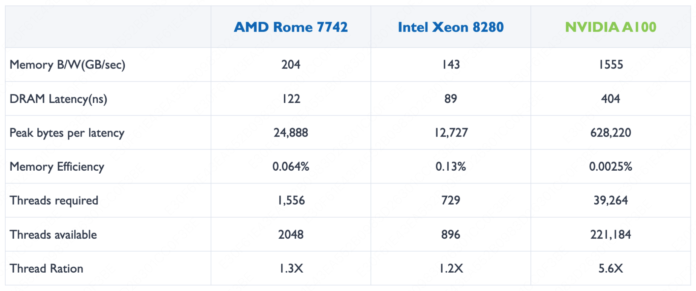
这里的 Threads required 是指理论上需要多少线程并行才能填满带宽时延，Threads available 是指这个芯片理论上的可用线程数。
从上图中我们可以看出来，GPU 有着非常非常多的线程，是为大量大规模任务并行而去设计的。
因此：
- GPU 的硬件设计师在不停的将所有的硬件资源投入到增加线程数和增加吞吐上；
- 而 CPU 的硬件设计师则在不断的想办法减少指令执行和数据传输的延迟。
GPU 缓存机制
GPU 中有 SM（Streaming Multiprocessors，流式多处理器）
每个 SM 都拥有私有的寄存器和 L1 级缓存；
所有 SM 共享同一块 L2 级缓存；
此外还有容量巨大的显存（HBM）。
以 NVIDIA A100 为例，Caches 缓存具体有：
| 缓存类型 | 每 SM 容量 | 总容量 | 说明 |
|---|---|---|---|
| 寄存器文件 | $256$ KB | $27$ MB | 每个 SM 私有的最快存储，每个线程独享 |
| L1 缓存 / 共享内存 | $192$ KB | $20$ MB | 可配置为 L1 缓存或共享内存，SM 内线程共享 |
| L2 缓存 | — | $40$ MB | 所有 SM 共享，统一管理 |
它的具体布局如图所示：
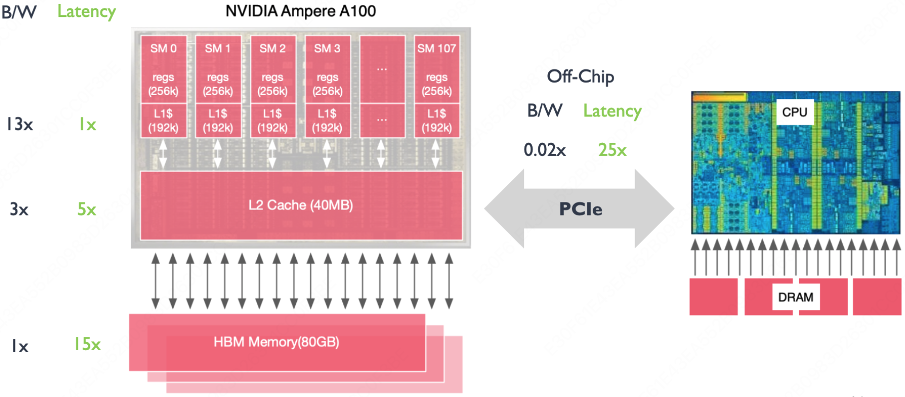
各级缓存的性能数据如下：
| 缓存类型 | B/W (GB/sec) | 计算强度 | 时延 (ns) | Threads Required |
|---|---|---|---|---|
| L1 Cache | $19,400$ GB/s | $8$ | $27$ ns | $32,738$ |
| L2 Cache | $4,000$ GB/s | $39$ | $150$ ns | $37,500$ |
| HBM | $1,555$ GB/s | $100$ | $404$ ns | $39,264$ |
| NVLink | $300$ GB/s | $520$ | $700$ ns | $13,125$ |
| PCIe | $25$ GB/s | $6,240$ | $1,470$ ns | $2,297$ |
GPU 模型架构
为了实现用户编程与底层硬件的解耦——即硬件每年迭代升级，用户在 CUDA 层编程时无需感知这些变化——NVIDIA 将 GPU 架构分为硬件架构和软件架构两层，用户不直接操作具体的硬件模块，而是给了一层软件层面的抽象，用户在 CUDA 层进行编程。
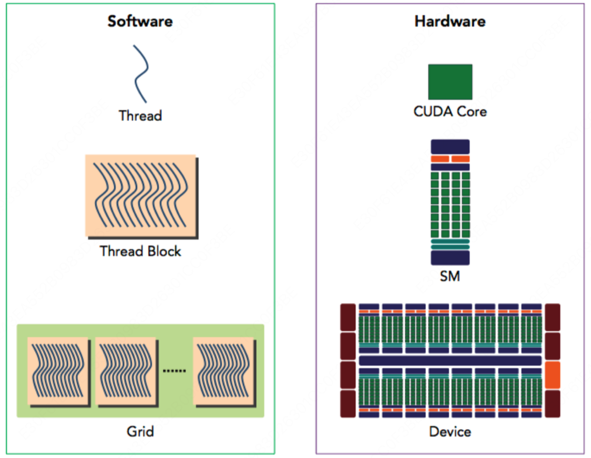
接下来我们来慢慢解释这张图上出现的名词和概念。
硬件架构
基本概念:
- GPC: 图像处理簇, Graphics Processing Clusters
- TPC: 纹理处理簇, Texture Processing Clusters。一个 GPC 里有多个 TPC。
- SM: 流多处理器, Stream Multiprocessors。一个 TPC 里有多个 SM。
- HBM: 高带宽存储器（显存）, High Bandwidth Memory
- Warp: 线程束，是 SM 的基本执行单元。逻辑上，所有线程都是并行的；但是硬件上，实际执行单元有限，不可能每个线程都在同一时刻执行。因此我们需要一种机制，把大量线程合理地映射到有限硬件上，让 GPU 可以高效调度。于是引入了 warp 概念。
我们打开一个 GPU 中的 SM，看看里面到底都有什么：
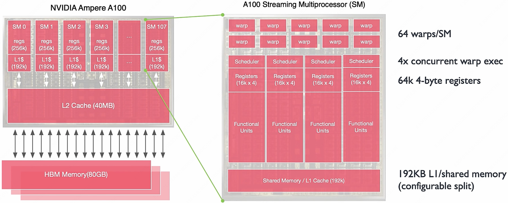
对应的具体数据如下：
| 每个 SM | A100 整体 (108 SMs) | |
|---|---|---|
| Total Threads | $2,048$ | $221,184$ |
| Total Warps | $64$ | $6,912$ |
| Active Warps | $4$ | $432$ |
| Waiting Warps | $60$ | $6,480$ |
| Active Threads | $128$ | $13,824$ |
| Waiting Threads | $1,920$ | $207,360$ |
软件架构
基本概念:
- Grid： 网格。表示所有要执行的任务。 Grid 中包含了许多相同线程 Threads 数量的块 Blocks。
- Block: 一个 block 上的 thread 会放在同一个 SM 中进行执行
- Thread： 线程。
我们来结合 CUDA 来介绍这几个概念：
CUDA 引入主机端(Host)和设备(Device)概念。一个 CUDA 程序中既包含 Host 代码，也包含 Device 代码。可以理解为 Host 就是 CPU 要执行的部分， Device 就是 GPU 要执行的部分。这样的话需要大量并行计算的部分就可以通过 GPU 进行运行，然后将结果返回给 CPU。
在 CUDA 程序构架中，Host 代码部分在 CPU 上执行，是普通 C 代码；当遇到数据并行处理的部分，CUDA 就会将程序编译成 GPU 能执行的程序，并传送到 GPU，这个程序在 CUDA 里称做 核(kernel)。
Device 代码部分在 GPU 上执行，此代码部分在 kernel 上编写（.cu 文件）。kernel 用 __global__ 符号声明，在调用时需要用 <<<grid, block>>> 来指定 kernel 要执行的具体结构。
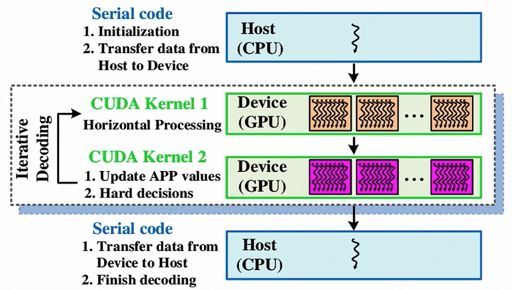
具体代码示例：
|
|
kernel 在 Device 中执行时，实际上是启动非常多的线程。一个 kernel 执行所启动的所有的线程被称为一个 网格(grid)
-
Grid 分为多个线程块（block），一个 block 里面包含很多线程。
-
block 间并行执行，并且无法通信，也没有执行顺序。
-
每个 block 包含共享内存（shared Memory），可由里面的 Thread 共享。
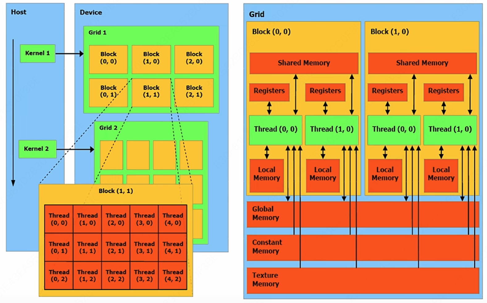
Q: 那么这里 CUDA 中引出的软件视角的线程模型和实际的硬件架构有什么关联呢？
- Block 线程块只在一个 SM 上通过 Warp 进行调度。
- 一旦在 SM 上调起了 Block 线程块，就会一直保留到执行完 Kernel。
- SM 可以同时保存多个 Block 线程块，块间并行的执行。
GPU 编程本质
由于有 Img2col 算法的存在，我们可以轻松地将图像处理中使用到的卷积运算转换为矩阵运算，因此 AI 中的绝大多数计算本质上都可以归结为矩阵运算。
而在 AI 计算模式中，不是所有的计算都可以是线程独立的：

大致可以划分为三种计算模式：
- Element-wise（逐元素操作）
比如 $\text{MAC}$ 操作
- Data Scales = $O(N)$： 数据量随 $N$ 线性增长
- Compute Scales = $O(N)$： 计算量也线性增长
- Intensity = $O(1)$： 两者比值是常数，计算强度不随 $N$ 增大而增大
→ 右边的图是一条水平线，说明不管数据规模多大，每份数据只做固定次数的计算，内存带宽永远是瓶颈，并行帮助有限。
- Local（局部连接）
比如卷积（CNN），每个输出只依赖周围固定窗口内的输入。
- Data Scales = $O(N^2)$： 二维数据，搬运量是 $N^2$
- Compute Scales = $O(N^2)$： 每个输出要计算 $k^2$ 次，输出数据有 $N^2$。($k$ 对于 $N$ 是一个常数)
- Intensity = $O(1)$： 比值依然是常数
→ 图也是水平线，性质和 Element-wise 一样，计算强度没有随规模提升的优势。
- All to All（全连接）
比如矩阵乘法（GEMM）、Attention——每个输出都依赖所有输入。
- Data Scales = $O(N^2)$： 二维数据，搬运量是 $N^2$
- Compute Scales = $O(N^3)$： 每个输出要计算 $N$ 次，输出数据有 $N^2$。
- Intensity = $O(N)$： 计算强度随 N 线性增大！
→ 图是一条斜向上的线，意味着矩阵越大，每次搬运的数据能做的计算越多，硬件利用率越高，越容易打满算力。
因此对于上面的 Element-wise 和 Local 来说，他们的计算强度没有办法通过调整输入的数据规模的增加来线性增加，也就是对于现在更强性能的 GPU 来说，我们没有办法充分地利用日益强大的算力。
因此，All to All 计算模式非常适合 GPU，而矩阵乘法（GEMM）和 Attention 恰好都属于此类，也是当前 LLM 中最核心的计算操作。
我们来看看随着矩阵规模 $N$ 的增大，计算强度和 GPU 硬件对于 FP32 和 FP64 精度的计算强度阈值的对比：

当然，上面说的是一种通用计算的计算强度阈值，NVIDIA 提出了一种专门针对矩阵运算的计算单元： Tensor Core。它对于矩阵运算的计算强度阈值非常高，这样我们就能根据不同的缓存等级来对矩阵规模做更精细化的利用。我们来看看 L1、L2、HBM 的计算阈值分别是多少：

因此我们可以知道，对于 L1，我们适合用一些比较小规模的矩阵进行运算，因为它的计算阈值比较小。这其实也很好理解，因为 L1 缓存的带宽非常高，数据传输非常快，自然留给我们计算的时间也就不多了。
NVIDIA GPU 架构发展

我们可以看到随着 AI 大模型的发展， CUDA Core 逐渐退出了历史舞台，取而代之的是专门做矩阵运算的 Tensor Core。
Tensor Core 原理
在深入探讨 Tensor Core 底层原理以及其对深度学习训练的加速之前，我们首先需要明确一个关键概念——混合精度训练。
这个概念的理解常常困扰很多人，有些人可能会在想，这不就是在训练的过程中同时使用 FP16（半精度浮点数）和 FP32（单精度浮点数）吗？这有啥难的？那你知道为什么要混合着用吗？
混合精度训练实际上是一种优化技术，它通过在模型训练过程中灵活地使用不同的数值精度来达到加速训练和减少内存消耗的目的。具体来说，混合精度训练涉及到两个关键操作：
- 计算的精度分配：在模型的前向传播和反向传播过程中，使用较低的精度（如 FP16）进行计算，以加快计算速度和降低内存使用量。由于 FP16 格式所需的内存和带宽均低于 FP32，这可以显著提高数据处理的效率。
- 参数更新的精度保持：尽管计算使用了较低的精度，但在更新模型参数时，仍然使用较高的精度（如 FP32）来保持训练过程的稳定性和模型的最终性能。这是因为直接使用 FP16 进行参数更新可能会导致训练不稳定，甚至模型无法收敛，由于 FP16 的表示范围和精度有限，容易出现梯度消失或溢出的问题。
另外，混合精度训练中通常还会使用损失缩放（loss scaling）技术来对于 loss 进行一定倍数的放大，该放大倍数会进一步作用到梯度上，从而尽量避免训练后期由于梯度过小导致的数值下溢出问题，使得模型参数更新保持稳定。
下面我们以 Volta 架构第一代 Tensor Core 举例
具体而言，混合精度训练每一轮更新的流程如下：
- 将 FP32 的权重转为 FP16，得到一个 FP16 的权重版本用于前向传播过程，同时依然保留 FP32 的权重作为用于后续参数更新的副本。
- Forward 过程使用较低精度进行计算：将 FP16 的激活值（activation）通过 FP16 的各层权重，最终得到 FP16 的 loss。
- Loss Scaling：将 FP16 的 loss 放大若干倍。
- 反向传播：使用放大后的 FP16 loss 进行反向传播，得到 FP16 的梯度（这里的梯度值相比于实际梯度值也是放大后的，其 scale 的倍数等同于上一步 loss scale 的倍数）。由于此时的梯度值是放大后的，因此即便使用 FP16 保存一般也不会出现下溢出问题。
- Gradient Upscaling：将 FP16 的梯度转为 FP32，然后进行反缩放（unscale），得到 FP32 的实际梯度值。这个实际梯度值可能非常小，但此时由于其使用 FP32 进行保存，因此也避免了下溢出问题。
- 最终，使用 FP32 的实际梯度来更新 FP32 的权重副本。
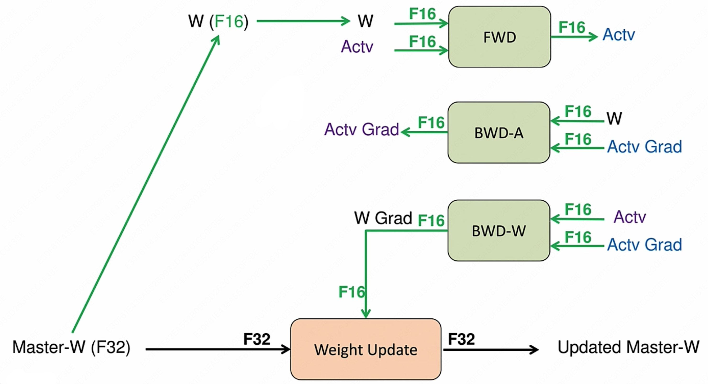
而在混合精度的实现上，其通常需要特定的硬件支持和软件优化。英伟达的 Tensor Core 就是专门设计来加速 FP16 计算的，同时保持 FP32 的累加精度，从而使得混合精度训练成为可能。所以 GPU 上具备 Tensor Core 是使用混合精度训练加速的必要条件。
在具体的运算过程中，Tensor Core 采用融合乘法加法(FMA)的方式来高效地处理计算任务。每个 Tensor Core 每周期能执行 4x4x4 GEMM，共计 $64$ 个浮点乘法累加（FMA）运算。
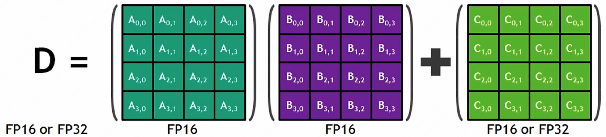
如上图所示，在执行运算 $D = A \times B + C$，其中 $A、B、C$ 和 $D$ 是 $4×4$ 矩阵。矩阵乘法输入 $A$ 和 $B$ 是 FP16 矩阵，而累加矩阵 $C$ 和 $D$ 可以是 FP16 或 FP32 矩阵。
有人可能会疑惑： $A \times B$ 是 $64$ 次 FMA 运算，然后再 $+\ C$ 应该还有 $16$ 次的 FMA 运算，总共应该是 $80$ 次？
No， Tensor core 在这里运算的时候其实是将 $+\ C$ 放在了开头，这样就可以利用上乘法运算的 $64$ 次运算了。
1 2 3 4 5 6 7 8 9 10 11 12 13 14# 伪代码 def tensor_core(A, B, C): # A: 4×4, B: 4×4, C: 4×4 D = [[0]*4 for _ in range(4)] # 矩阵乘法（用 FMA 实现） for i in range(4): for j in range(4): acc = C[i][j] # 从 C 初始加载 for k in range(4): acc += A[i][k] * B[k][j] # 这是 FMA D[i][j] = acc return D
我们再来看看 CUDA 中是如何实际使用 Tensor Core 的？
在 CUDA 编程体系中，我们并非直接对线程进行控制，而是通过控制一个 Warp，一个 Warp 包含很多线程（通常为 32 个线程），这些线程并行执行，利用 GPU 的并行计算能力。
这里为什么 Tensor Core 每个时钟周期可以执行 $64$ 个浮点乘法累加（FMA），其实就是利用了多线程的功劳。
在实际执行过程中，CUDA 会对 Warp 进行同步操作，确保其中的所有线程都达到同步点，并获取相同的数据。然后，这些线程将一起执行矩阵相乘和其他计算操作，通常以 $16\times16$ 的矩阵块为单位进行计算。最终，计算结果将被存储回不同的 Warp 中，以便后续处理或输出。（这里的 $16\times16$ 是因为一个 tensor core 的“原子操作” $4\times 4$ 矩阵运算实在太小了，就做了一层封装，对外提供更大的 $16\times16$ 的 API 接口）
我们可以把 Warp 理解为软件上的一个大的线程概念，它帮助简化了对 GPU 并行计算资源的管理和利用。我们只需要通过对 Warp 进行组装使用，而无需关注更低一层的线程调度，便可以写出 CUDA 程序来实现高效、快速的并行计算。
CUDA 通过 CUDA C++ WMMA API 向外提供了 Tensor Core 在 Warp 级别上的计算操作支持。这些 C++ 接口提供了专门用于矩阵加载、矩阵乘法和累加、以及矩阵存储等操作的功能。其中的 mma_sync 就是执行具体计算的 API 接口。借助这些 API，开发者可以高效地利用 Tensor Core 进行深度学习中的矩阵计算，从而加速神经网络模型的训练和推理过程。
|
|
其中：
fragment：Tensor Core 数据存储类，支持matrix_a、matrix_b和accumulator；load_matrix_sync：Tensor Core 数据加载 API，支持将矩阵数据从 global memory 或 shared memory 加载到 fragment；store_matrix_sync：Tensor Core 结果存储 API，支持将计算结果从 fragment 存储到 global memory 或 shared memory；fill_fragment：fragment 填充 API，支持常数值填充；mma_sync：Tensor Core 矩阵乘计算 API，支持 $D = A \times B + C$ 或者 $C = A \times B + C$。
我们来看一个简单的使用例子:
|
|
那我们之前看到的也只是 $16 \times 16$ 的矩阵运算，现在的 LLM 中都是类似于 $2048 \times 2048$ 这样的大矩阵的运算，这是怎么做到的呢？
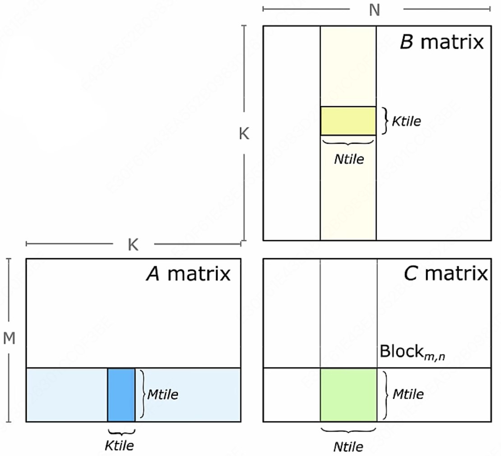
本质上会通过硬件的多级缓存机制，通过分块去计算，最终通过 tensor core 去完成计算。
假设我们要计算 $ \mathbb{R} ^ {M \times K} \times \mathbb{R} ^ {K \times N}$ 这两个大矩阵相乘，我们会将它：
- 划分为 $ \mathbb{R} ^ {M\_tile \times K\_tile} \times \mathbb{R} ^ {K\_tile \times N\_tile}$ 的分块乘法
- 块内计算利用 tensor core 做计算加速
我们首先来看看朴素版本的矩阵乘法实现：
由公式 $C_{i,j} = \sum_{k=0}^{K-1} A_{i,k} B_{k,j}$ 可得：
|
|
对于 CPU 来说，由于矩阵在内存中默认是按行连续存储，因此从缓存局部性来考虑，在行主序存储、且不做额外分块优化的朴素实现中，$i→k→j$ 往往具有更好的缓存局部性。
虽然这样计算满足了缓存局部性，但是面对大矩阵计算时，一行没办法全部都放入缓存时，这时候我们就要考虑用分块计算（tiling）来打满缓存，最大程度上利用完缓存的高速：
|
|
而为了充分利用上 GPU 并行计算的能力，刚刚的代码中的分块矩阵乘法就可以交给 CUDA 进行并行计算：
|
|
在计算矩阵乘法时，为了加速计算并减少内存访问延迟，通常会将矩阵 $A$ 和矩阵 $B$ 的数据加载到 SMEM 共享内存中。共享内存是线程块内所有线程都可以访问的一块快速内存，它允许线程之间进行数据交换和协作，而不必每次都从全局内存（Global Memory）中读取数据。
在矩阵乘法中，每个 Warp 会负责计算结果矩阵 $C$ 的一个或多个部分。这通常通过将结果矩阵 $C$ 的不同块分配给不同的 Warp 来实现，每个 Warp 独立地计算其分配到的部分。由于 Warp 内的线程是同步执行的，因此它们可以共同协作，使用共享内存中的数据来完成它们的计算任务。这种分配方式充分利用了 GPU 的并行计算能力，并减少了内存访问的延迟，从而提高了矩阵乘法的性能。
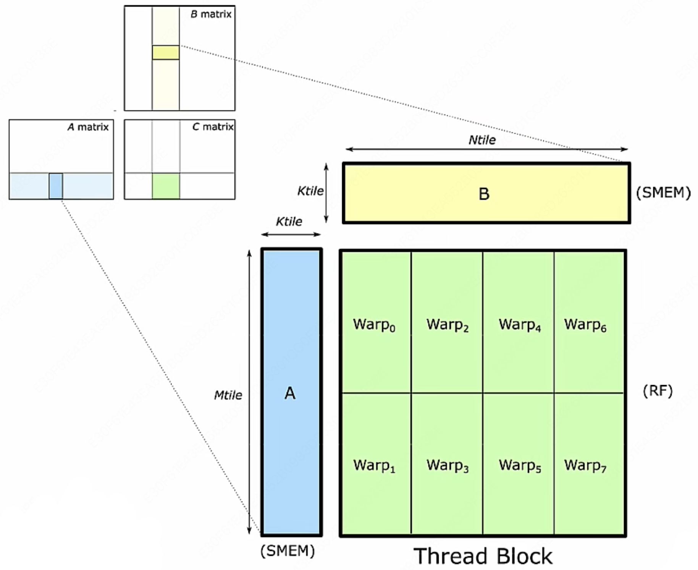
代码上来看就是这样：
|
|
当执行矩阵乘法时，Warp 中的线程会协同工作，完成一系列乘法和加法操作。这个过程涉及到从共享内存（SMEM）加载数据到寄存器（RF）进行计算，然后将结果存储回寄存器或全局内存中。
我们再打开单个 Warp 来看看具体是怎么计算的：
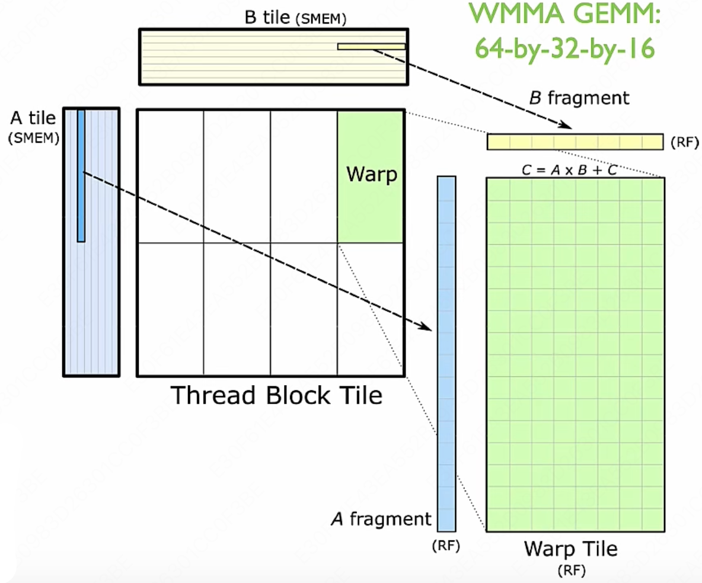
为了进行计算，Warp 中的线程需要从共享内存中加载矩阵 $A$ 和 $B$ 的片段 tile 到它们的寄存器中。这些片段是矩阵的一小部分，加载到寄存器中可以实现快速的数据访问和计算。这要求数据从共享内存到寄存器的加载速度足够快，以避免计算线程等待数据，从而保持计算的高效性。
然后，每个线程在寄存器上执行矩阵乘法操作，计算结果矩阵 $C$ 的一个或多个元素。这些元素暂存于线程的寄存器中，直到所有必要的乘法和加法操作完成。在计算过程中，为了最大化线程的计算效率，共享内存中的数据按照特定维度（$K$ 维）进行排序。这种排序方式有助于减少内存访问延迟，使得线程能够更高效地访问所需的数据。
对应的代码就是这样：
|
|
这里可能你会有点疑惑，我们刚刚不是分析按 $i→k→j$ 顺序进行计算是对缓存局部性最优的吗？为什么这里又在按照 $K$ 维来排序，也就是顺序变成了 $i→j→k$？
关键区别在于：
[CPU 场景] $(i→k→j)$
- 优化目标：最小化缓存失效
- 单线程执行，缓存局部性重要
[GPU 场景] $(i→j→k)$
优化目标：最大化计算强度和数据复用
原因：
每个线程计算一个 $C_{i,j}$，并保持在寄存器中
对同一个 $C_{i,j}$，在内层 $k$ 循环中持续做累加
避免频繁读写 $C_{i,j}$（寄存器重用）
减少中间结果在共享内存/全局内存的换入换出
如果也用 $i→k→j$：
✗ 完成一个 $k$ 值后，$C_{i,j}$ 就需要写回
✗ 下一个 $k$ 值来时，又要重新读 $C_{i,j}$
✗ 频繁的读写操作浪费内存带宽
刚刚我们看到了 Warps-level 的矩阵乘，我们再打开一层，看看具体的线程是怎么执行的？
但其实线程我们没办法控制，我们只能从 warp 层进行控制调度
在 Tensor Core 里面并行执行的就是下图所述的形式，矩阵 $A$ 乘以矩阵 $B$ 等于 $C$ 矩阵这么一个简单最核心操作。
Tensor Core 是英伟达 GPU 的硬件，CUDA 编程模型提供了 WMMA（Warp-level Matrix Multiply-Accumulate）API，这个 API 是专门为 Tensor Core 设计的，它允许开发者在 CUDA 程序中直接利用 Tensor Core 的硬件加速能力。通过 WMMA API，开发者可以执行矩阵乘法累积操作，并管理数据的加载、存储和同步。
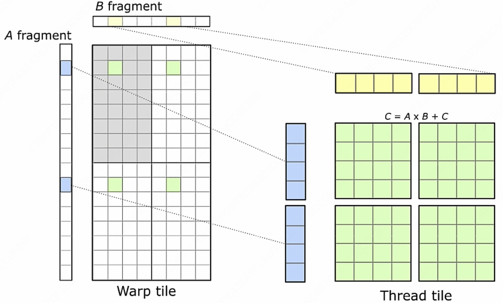
这里按照这个拆分方式是因为： 在 GEMM（General Matrix Multiply，通用矩阵乘法）的软硬件分层中，数据复用是一个非常重要的概念。由于矩阵通常很大，包含大量的数据，因此有效地复用这些数据可以显著提高计算效率。在每一层中，都会通过不同的内存层次结构（如全局内存、共享内存和寄存器）来管理和复用数据。
|
|
下一个问题是： GEMM 结束，我们如何写出最终的整个大矩阵运算的结果？
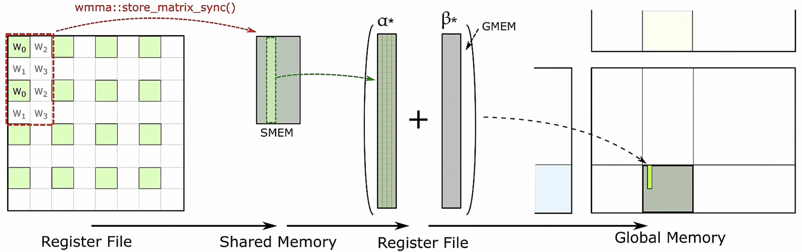
计算出来的结果会通过 WMMA 的 API 来将运算中的数据搬运到共享内存中存放起来。
由于我们刚在在分块过程中是对行列向量进行的运算，每一块小的行列向量算出来的结果，还得等其他的行列向量计算出结果来，再进行一次累加，这时候又得把这些分块算出来的结果都从 SMEM 中重新取回寄存器再进行一次加法。等把所有的数据这些数据累积起来后，再存放在全局内存里面。通过全局内存把一个块一个块的拼接起来，把数据回传写出结果。
最后我们再来总结一下整个的计算过程：

下面我们再来看看 Tensor Core 的历代发展：

自 Volta 架构时代起，英伟达的 GPU 架构已经明显地转向深度学习领域的优化和创新。2017 年，Volta 架构横空出世，其中引入的张量核心（Tensor Core）设计可谓划时代之作，这一设计专门针对深度学习计算进行了优化，通过执行融合乘法加法操作，大幅提升了计算效率。与前一代 Pascal 架构相比，Volta 架构在深度学习训练和推理方面的性能提升了 3 倍，这一飞跃性进步为深度学习的发展提供了强大的硬件支持。
紧随其后，在一年后的 2018 年，英伟达发布了 Turing 架构，进一步增强了 Tensor Core 的功能。Turing 架构不仅延续了对浮点运算的优化，还新增了对 INT8、INT4、甚至是 Binary(INT1)等整数格式的支持。这一举措不仅使大范围混合精度训练成为可能，更将 GPU 的性能吞吐量推向了新的高度，较 Pascal GPU 提升了惊人的 32 倍。此外，Turing 架构还引入了先进的光线追踪(RT Core)技术。
2020 年，Ampere 架构的推出再次刷新了人们对 Tensor Core 的认知。Ampere 架构新增了对 TF32 和 BF16 两种数据格式的支持，这些新的数据格式进一步提高了深度学习训练和推理的效率。同时，Ampere 架构引入了对稀疏矩阵计算的支持，在处理深度学习等现代计算任务时，稀疏矩阵是一种常见的数据类型，其特点是矩阵中包含大量零值元素。传统的计算方法在处理这类数据时往往效率低下，而 Ampere 架构通过专门的稀疏矩阵计算优化，实现了对这类数据的高效处理，从而大幅提升了计算效率并降低了能耗。此外，Ampere 架构还引入了 NVLink 技术，这一技术为 GPU 之间的通信提供了前所未有的高速通道。在深度学习等需要大规模并行计算的任务中，GPU 之间的数据交换往往成为性能瓶颈。而 NVLink 技术通过提供高带宽、低延迟的连接，使得 GPU 之间的数据传输更加高效，从而进一步提升了整个系统的计算性能。
到了 2022 年，英伟达发布了专为深度学习设计的 Hopper 架构。Hopper 架构标志性的变化是引入了 FP8 张量核心，这一创新进一步加速了 AI 训练和推理过程。值得注意的是，Hopper 架构去除了 RT Core，以便为深度学习计算腾出更多空间，这一决策凸显了英伟达对深度学习领域的专注和投入。此外，Hopper 架构还引入了 Transformer 引擎，这使得它在处理如今广泛应用的 Transformer 模型时表现出色，进一步巩固了英伟达在深度学习硬件领域的领导地位。
2024 年，英伟达推出了 Blackwell 架构为生成式 AI 带来了显著的飞跃。相较于 H100 GPU，GB200 Superchip 在处理 LLM 推理任务时，性能实现了高达 30 倍的惊人提升，同时在能耗方面也实现了高达 25 倍的优化。其中 GB200 Superchip 能够组合两个 Blackwell GPU，并与英伟达的 Grace 中央处理单元配对，支持 NVLink-C2C 互联。此外，Blackwell 还引入了第二代 Transformer 引擎，增强了对 FP4 和 FP6 精度的兼容性，显著降低了模型运行时的内存占用和带宽需求。此外，还引入了第五代 NVLink 技术，使每个 GPU 的带宽从 900 GB/s 增加到 1800 GB/s。
总的来说，从 Volta 到 Blackwell，英伟达的 GPU 架构经历了一系列针对深度学习优化的重大创新和升级，每一次进步都在推动深度学习技术的边界。这些架构的发展不仅体现了英伟达在硬件设计方面的前瞻性，也为深度学习的研究和应用提供了强大的计算支持，促进了 AI 技术的快速发展。
接下来，我们将逐一深入剖析每一代 Tensor Core 的独特之处，以揭示其背后的技术奥秘。
TODO: 待补充每一代 GPU 的 Sub Core 设计细节…
下面我们再来看看 Tensor Core 实际硬件是如何设计的，才能在一个时钟周期完成 $4 \times 4$ 的矩阵运算 $D = A \times B + C$
我们先来看结果矩阵的一个元素 $D_{i,j}$ 是如何被计算出来的：
$$ D_{i,j} = A_{i,0} B_{0,j} + A_{i,1} B_{1,j} + A_{i,2} B_{2,j} + A_{i,3} B_{3,j} $$计算元素 $D_{0,0}$ 时，内部模拟电路设计逻辑上等价于这样：
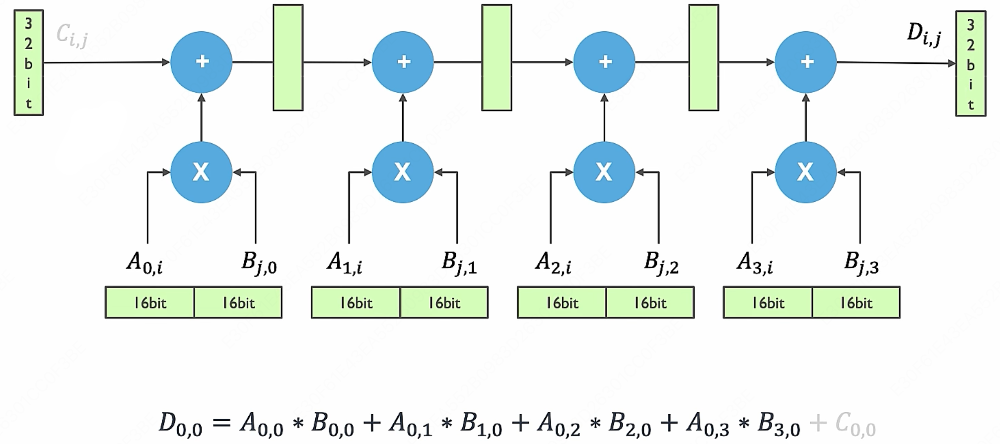
实际电路中使用了指令流水线的优化方式，来提高执行大量计算时的效率。由于乘法执行单元和加法执行单元不一样，因此这两个可以并行，所以下一条指令的乘法执行时间就可以被上一条指令中的加法的时间给掩盖掉：
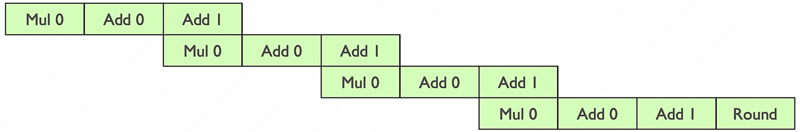
这样的话如果单个乘加操作需要 $5$ 个周期： Mul0 Mul0 Add0 Add1 Round。我们需要执行 $4$ 次 MAC 操作，那么总耗时其实会因为流水线技术从 $4\times 5=20$ 个周期优化到 $2 + 2\times 4 +1 = 11$ 个周期。
因此实际单个 tensor core 小单元只需要一个独立的加法和乘法单元就行，通过指令流水线技术就可以进行非常高的并行度。
我们可以把结果矩阵元素的计算电路抽象为下面这样的一个电路单元：
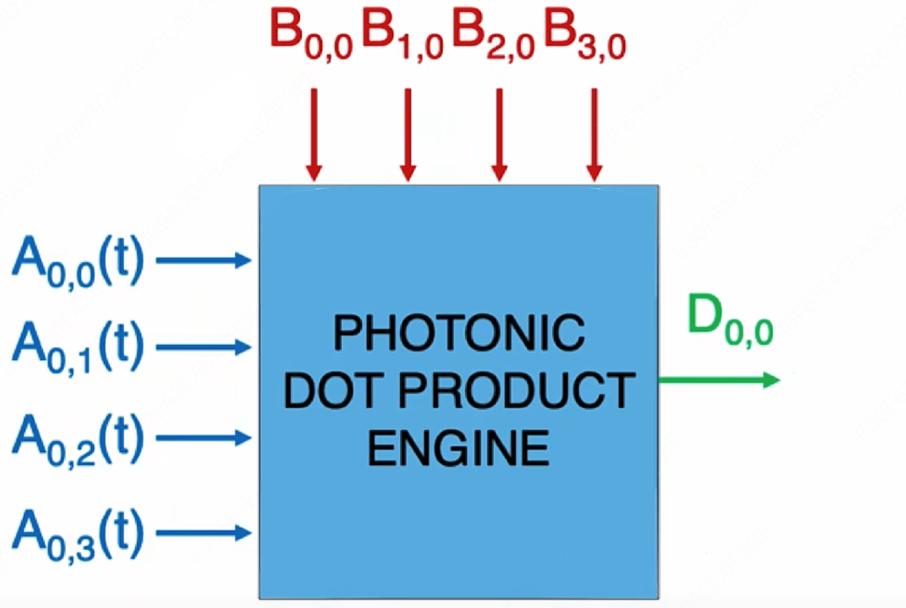
接下来我们就可以利用许多个这样的电路单元，像“搭积木”一样，搭出我们想要的 Tensor Core 的电路了：
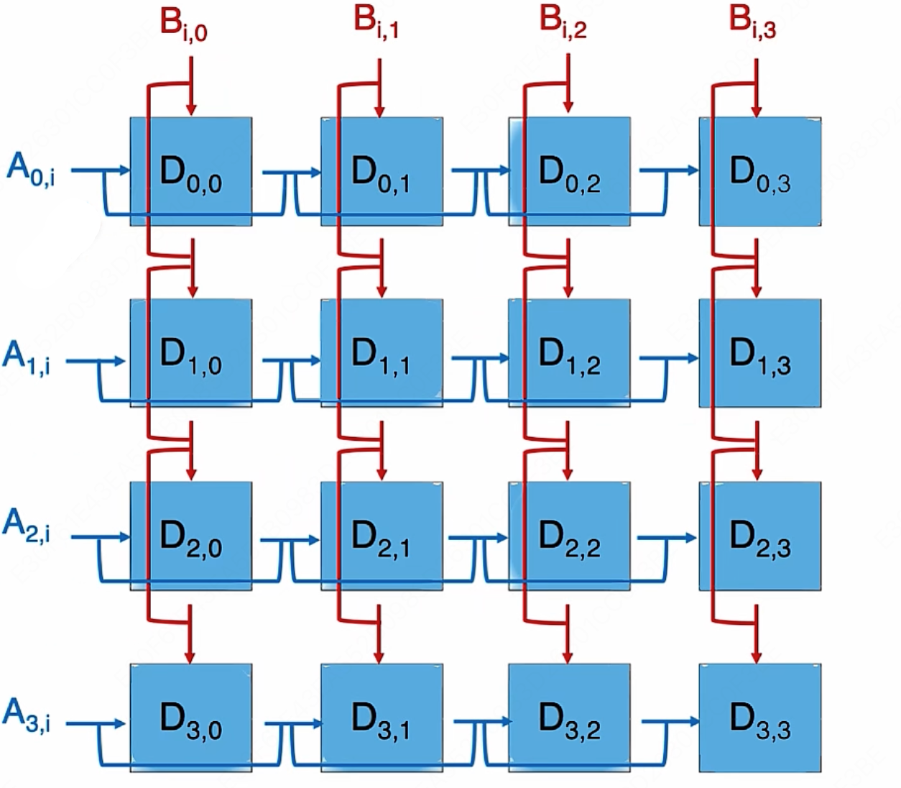
当然本质上也不会真的有这么多个独立的硬件电路，但是我们可以复用硬件资源，通过流水线技术达到逻辑图的效果
NVLink 原理
在进入大模型时代后，大模型的发展已成为 AI 的核心，但训练大模型实际上是一项比较复杂的工作，因为它需要大量的 GPU 资源和较长的训练时间。
此外，由于单个 GPU 工作线程的内存有限，并且许多大模型的大小已经超出了单个 GPU 的范围。所以就需要实现跨多个 GPU 的模型训练，这种训练方式就涉及到了分布式通信和 NVLink。当谈及分布式通信和 NVLink 时，我们进入了一个引人入胜且不断演进的技术领域，本节我们将简单介绍分布式通信的原理和实现高效分布式通信背后的技术 NVLink 的演进。
分布式通信是指将计算机系统中的多个节点连接起来，使它们能够相互通信和协作，以完成共同的任务。而 NVLink 则是一种高速、低延迟的通信技术，通常用于连接 GPU 之间或连接 GPU 与其他设备之间，以实现高性能计算和数据传输。
NVLink 和 NVSwitch 是英伟达推出的两项革命性技术，它们正在重新定义 CPU 与 GPU 以及 GPU 与 GPU 之间的协同工作和高效通信的方式。
- NVLink 是一种先进的总线及其通信协议。NVLink 采用点对点结构、串列传输，用于中央处理器（CPU）与图形处理器（GPU）之间的连接，也可用于多个图形处理器（GPU）之间的相互连接。
- NVSwitch 是一种高速互连技术，同时作为一块独立的 NVLink 芯片，其提供了高达 18 路 NVLink 的接口，可以在多个 GPU 之间实现高速数据传输。
正是这两项技术的引入替代了传统的 PCIe，为 GPU 集群和深度学习系统等应用场景带来了更高的通信带宽和更低的延迟，从而提升了系统的整体性能和效率。
NVLink 其实是一套协议，它定义了：
- 电压标准
- 信号格式
- 通信规则
- 数据传输速率
- 握手机制等
这套协议定义出来了，还需要专门的硬件去实现和适配它，对应的其实就是 GPU 上的 NVLink 接口，还有我们经常在现实生活中看到的下图右下角这个小小的黑色块状连接器,你可不要小看这个小黑条，它可是售价一千多人民币（老黄还是太邪恶了）
它插在两张显卡的两个接口上，就可以让这两张显卡通过 NVLink 协议直连，这一块 NVLink 便可带来 $50$ GB/s 的带宽。我们还可以增加两张显卡之间的 NVLink 数量来获得成倍的带宽。
NVLink 也有非常多的版本更新，就像每隔几年就会出现更强性能的 GPU 一样，每一代新的 NVLink 都会提供更大的带宽：
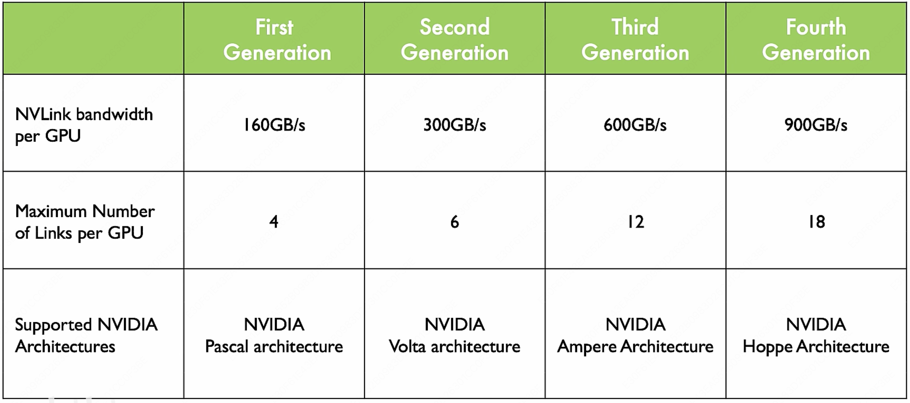
当然你会发现近几代的单条 NVLink 的带宽都还是 $50$ GB/s，只是因为每块 GPU 能插上去的 NVLink 更多了，所以整体的带宽更多了。
在现代 GPU 架构中，当多个 GPU 在没有专用高速互连技术（如 NVLink）的系统中协同工作时，它们之间的通信通常是通过 PCI Express（PCIe）总线进行的。如果一个 GPU 需要直接访问另一个 GPU 的 HBM 内存，数据必须通过 PCIe 总线传输，这会受到 PCIe 带宽的限制。这种通信方式比 GPU 内部访问 HBM 的速度慢得多，因为 PCIe 的带宽远低于 HBM 的内存带宽。同时此时 CPU 充当数据交换的中介。CPU 负责在多个 GPU 之间分配和调度计算任务，以及管理数据在 GPU 和系统内存之间的传输。由于还得经过 CPU 进行调度，明显会有大量的时延。
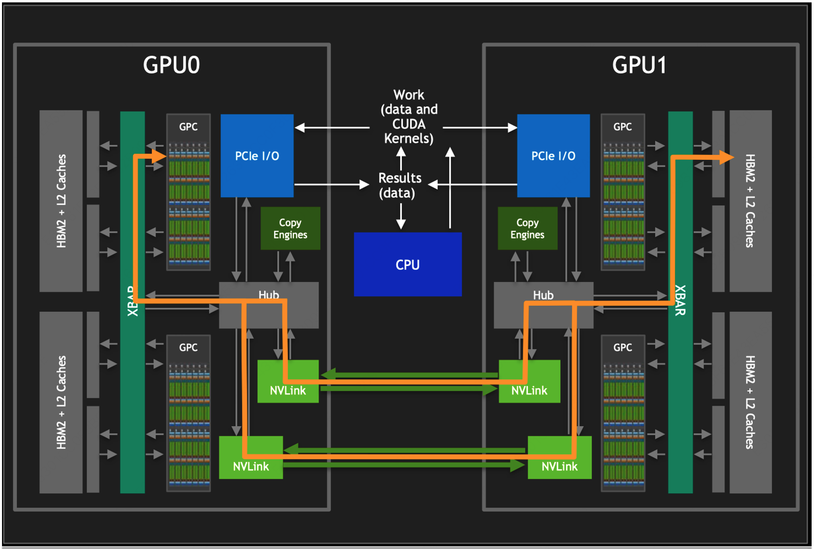
通过 NVLink，GPU 的图形处理簇（GPCs）可以直接访问连接在同一系统中其他 GPU 上的高带宽内存（HBM）数据。这种直接的内存访问机制显著降低了数据交换的延迟，并提高了数据处理的速度。同时，NVLink 支持多条链路同时操作，这意味着可以通过多条 NVLink 同时对其他 GPU 内的 HBM 数据进行访问，极大地增加了带宽和通信速度。每条 NVLink 链路都提供了远高于 PCIe 的数据传输速率，多条链路的组合使得整体带宽得到了成倍增加。
此外，NVLink 不仅仅是一种点对点的通信协议，它还可以通过连接到 GPU 内部的交换机（XBARs）来实现更复杂的连接拓扑。这样哪怕两台 GPU 没有通过 NVLink 直连，但是可以通过他们各自直连的中间节点进行数据的转发，这种能力使得多 GPU 系统中的每个 GPU 都能以极高的效率访问其他 GPU 的资源，包括内存和计算单元。而且，NVLink 并不是要取代 PCIe，而是作为一种补充和增强。在某些情况下，系统中可能同时使用 NVLink 和 PCIe，其中 NVLink 用于高速 GPU 间通信，而 PCIe 则用于 GPU 与其他系统组件（如 CPU、存储设备）之间的通信。这种设计允许系统根据不同的通信需求灵活选择最合适的技术，从而最大化整体性能和效率。
接下来我们拆开看看一个 NVLink 连接器为什么能提供这么高的带宽？
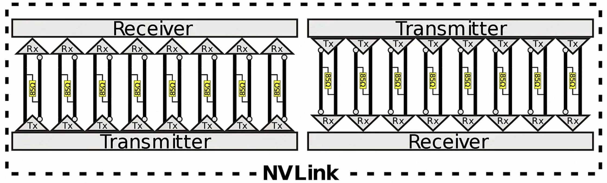
在 NVLink 的链接架构中，一个关键的概念是“Brick”，它指的是 NVLink 通道的基本单元。如上图所示，每个 NVLink 是一个双向接口，由 $8$ 个差分对组成，总计 $32$ 条线。这些差分对采用直流耦合（DC coupled）技术，并配置有 $85\Omega$ 的差分终端，以优化信号传输质量。
同时为了进一步提高设计的灵活性和兼容性，NVLink 引入了通道反转（Channel Reversal）和通道极性（Channel Polarity）的概念。这意味着，设备间的物理通道顺序和极性可以根据实际布线和设计需要进行调整，从而简化了物理布局和路由的复杂度。
这里涉及到了一些电气工程的基本概念，我们进行一些介绍：
术语 含义 作用 差分对 一正一反两条线接受信号
这样当有误差时，两条线都会产生
最终结果进行一次做差便可以将误差抵消噪声相抵：
1. 增强了抗干扰能力
2. 使用更多的电压等级一次传输更多数据Brick NVLink 基本单元 组织 8 条 Lane 直流耦合 信号直接传输 低延迟、高保真 $85\Omega$ 终端 接收端电阻 阻止信号反射 通道反转 交换 TX±位置 简化 PCB 布线 通道极性 翻转信号相位 提高容错性
我们再来看看 NVLink 传输的数据包长什么样：
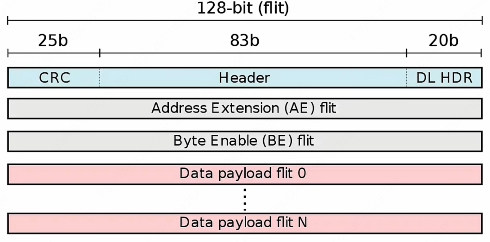
如上图所示，在数据传输方面，NVLink 采用了基于 flit（flow control digit）的数据包结构。一个单向的 NVLink 数据包可以包含 $1∼18$ 个 flit，每个 flit 包含 $128$ 位。这种设计允许在单个数据包中传输不同大小的数据，从而提高了传输的灵活性和效率。
例如，一个包含 $1$ 个头部 flit（header flit）加上 $16$ 个数据有效载荷 flit（Data payload flit）的数据包可以实现单向 256 字节的传输，达到 $94.12\%$ 的峰值带宽利用率。而一个包含 $1$ 个头部 flit 加上 $4$ 个数据有效载荷 flit 的数据包，则可以实现单向 $64$ 字节的传输，带宽利用率为 $80\%$。
头部 flit 的结构设计包含了 $25$ 位的循环冗余校验（CRC）、$83$ 位的传输字段（Transaction field）和 $20$ 位的数据链路字段（Data link）。传输字段中包括了请求类型、地址、流量控制位和标记标识符等信息，而数据链路字段则涉及到数据包长度、应用编号标签和确认标识符等内容。地址扩展（Address Extension）机制通过保留静态位，仅传输变化位来进一步优化了数据传输效率。
NVLink 协议通过 $25$ 位 CRC 实现了错误检测，确保了数据传输的可靠性。接收方（Receiver）负责将接收到的数据保存在重播缓冲区（Replay buffer）中，对数据包进行排序，并在确认 CRC 无误后将数据发送回源端。CRC 字段的设计使得最大数据包能够容忍高达 $5$ 个随机位错误，或者在差分对发生突发错误时，支持最多 $25$ 个连续位错误的容错能力。
通过这种精心设计的电气和数据结构，NVLink 不仅提高了数据传输的速度和效率，还确保了在高速传输过程中的稳定性和可靠性，为高性能计算提供了强有力的支持。
看完 NVLink 的具体细节，我们再来看看在宏观层面上，我们的多台 GPU 如何通过 NVLink 实现组网呢？
这就需要考虑 NVLink 的互联拓扑。
我们用第一代 NVLink 进行分析，每台 GPU 上最多可以连接 $4$ 个 NVLink 连接器，也就是说最多可以有 $1 + 4 =5$ 台 GPU 做到全直连。
如果遇到更多的 GPU 想进行连接呢？这就得通过我们上面提到的 GPU 内部的交换机（XBARs）来实现更复杂的连接拓扑了。
此时由于每台 GPU 上最多可以连接 $4$ 个 NVLink 连接器，这 $4$ 个里面还得有一个来连接其他的 GPU 组。所以我们的一个 GPU 组最多支持 $4$ 台 GPU。然后每 $4$ 台组成一个 mesh 结构，组和组之间也通过 NVLink 直连，这样可以达到理论上全局最优。也就是下图展现的这种结构：
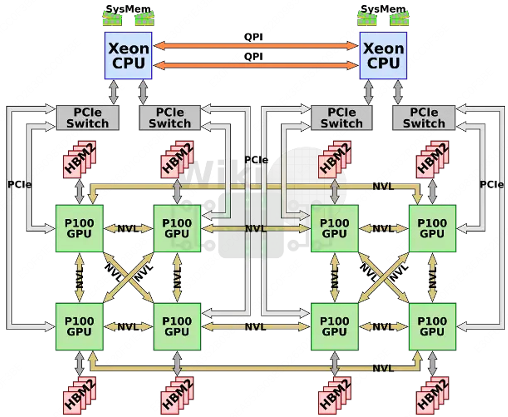
初代 DGX-1 通常采用了一种类似于上图的互联形式。不过，IBM 在基于 Power8+ 微架构的 Power 处理器上引入了 NVLink 1.0 技术，这使得英伟达的 P100 GPU 可以直接通过 NVLink 与 CPU 相连，而无需经过 PCIe 总线。这一举措实现了 GPU 与 CPU 之间的高速、低延迟的直接通信，为深度学习和高性能计算提供了更强大的性能和效率。
当然上面这种组网方式，随着我们对 GPU 集群中 GPU 数量需求的日益增长，以及不适合了，因为复杂度很高，同时每台 GPU 不是类似于直连的，需要有中间 GPU 跳数，所以会有很大的速度差异。因此新的技术 NVSwitch 应运而生，我们将在下一节中进行详细的介绍。
NVSwitch
随着单个 GPU 的计算能力逐渐逼近物理极限，为了满足日益增长的计算需求，多 GPU 协同工作成为必然趋势。
NVLink 技术的核心优势在于它能够绕过传统的 CPU 分配和调度机制，允许 GPU 之间进行直接的数据交换。这种设计不仅减少了数据传输的延迟，还大幅提升了整个系统的吞吐量。此外，通过 NVLink GPCs 可以访问卡间 HBM2 内存数据，也可以对其他 GPU 内的 HBM2 数据进行访问。
在多 GPU 系统中，NVLink 还起到了 XBARs 的作用，它作为不同 GPU 之间的桥梁，允许数据在 GPU 之间自由流动。还巧妙地避开了与 PCIe 总线的冲突，使得 NVLink 和 PCIe 可以作为互补的解决方案共存，共同为系统提供所需的数据传输能力。
NVSwitch 则是在此基础上进一步发展，支持完全无阻塞的全互联 GPU 系统，通过提供更多的 NVLink 接口，没有任何中间 GPU 跳数，实现更大规模的 GPU 互联，从而构建出更加强大的计算集群。
在英伟达的技术演进历程中，Pascal 架构首次引入了 NVLink，这一创新如同开辟了一条高速通道，极大地提升了 GPU 之间的通信效率。然而，真正的技术飞跃发生在下一代的 Volta 架构中，伴随着 NVSwitch 的诞生。
NVSwitch 的出现，犹如在数据传输的网络中架设了一座智能枢纽，它不仅支持更多的 NVLink 链路，还允许多个 GPU 之间实现全互联，极大地优化了数据交换的效率和灵活性。
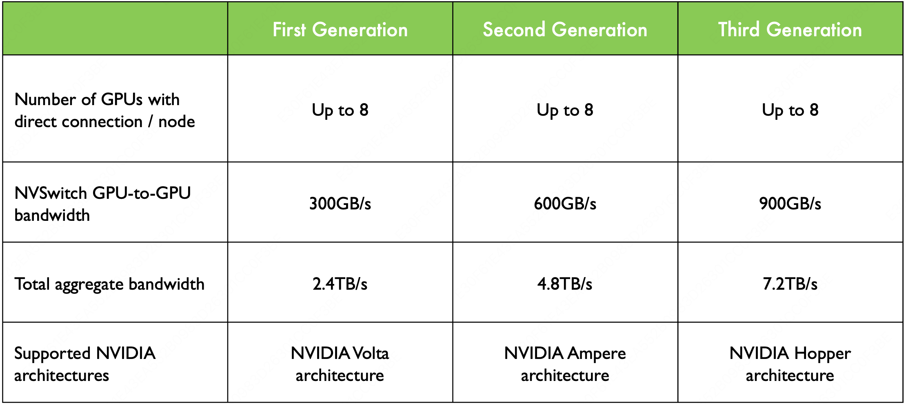
有了 NVSwitch，我们在面对多台 GPU 连接的互联拓扑也相应的发生了变化：
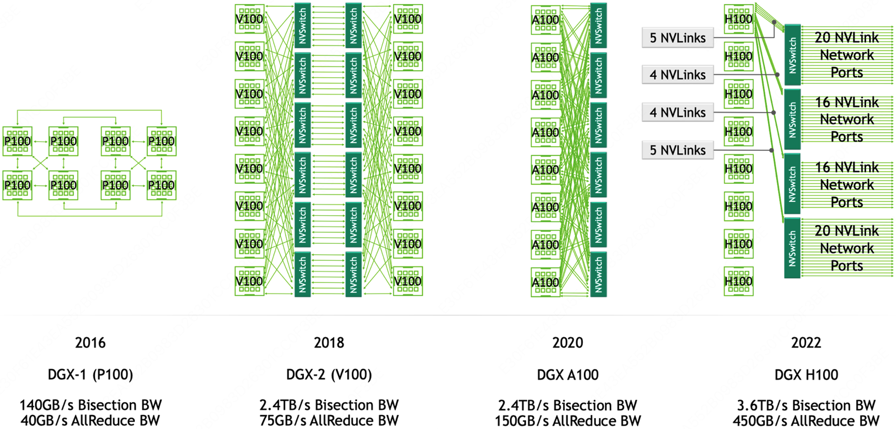
上图展示的是 DGX 服务器 GPU 芯片互联的架构图，如图所示，在 DGX-1 P100 中有 $8$ 张 GPU 卡，每张 GPU 卡支持 $4$ 条 NVLink 链路，这些链路允许 GPU 之间进行高速通信。在 DGX-1 P100 中，GPU 卡被组织成两个 cube mesh，每个 cube 包含 $4$ 个 GPU（GPU $0∼3$ 和 GPU $4∼7$）。在每个 cube 内部，GPU 之间可以直接通过 NVLink 或通过 PCIe Switch 进行通信。然而，跨 cube 的通信（例如 GPU 0 和 GPU 4）需要通过其他 GPU 间接进行。
DGX-2 引入了英伟达的第一代 NVSwitch 技术，这是一个重要的进步，因为它允许更高效的 GPU 间通信。在 Volta 架构中，每张 GPU 卡支持 $6$ 条 NVLink 链路，而不再是 $4$ 条。此外，通过引入 $6$ 个 NVSwitch，NVSwitch 能够将服务器中的所有 GPU 卡全部互联起来，并且支持 $8$ 对 GPU 同时通信，不再需要任何中间 GPU 跳数，实现直接高速通信，这大大提高了数据传输的效率和整体计算性能。
DGX-A100 使用的是第二代 NVSwitch 技术。相比于第一代，第二代 NVSwitch 提供了更高的通信带宽和更低的通信延迟。在 A100 架构中，每张 GPU 卡支持 $12$ 条 NVLink（第三代）链路，并通过 $6$ 个 NVSwitch 实现了全连接的网络拓扑。虽然标准的 DGX A100 配置仅包含 $8$ 块 GPU 卡，但该系统可以扩展，支持更多的 A100 GPU 卡和 NVSwitch，以构建更大规模的超级计算机。
DGX-H100 使用的是第三代 NVSwitch 和第四代 NVLink 技术，其中每一个 GPU 卡支持 $18$ 条 NVLink 链路。在 H100 架构中，通过引入了 $4$ 个 NV Switch，采用了分层拓扑的方式，每张卡向第一个 NV Switch 接入 $5$ 条链路，第二个 NV Switch 接入 $4$ 条链路，第三个 NV Switch 接入 $4$ 条链路，第四个 NV Switch 接入 $5$ 条链路，总共 $72$ 个 NVLink 提供 $3.6$ TB/s 全双工 NVLink 网络带宽，比上一代提高 $1.5$ 倍。
TODO： 继续深入 NVSwitch 内部去补充设计实现的具体细节
TPU
网络
RDMA
RDMA(Remote Direct Memory Access)，远程直接内存访问。
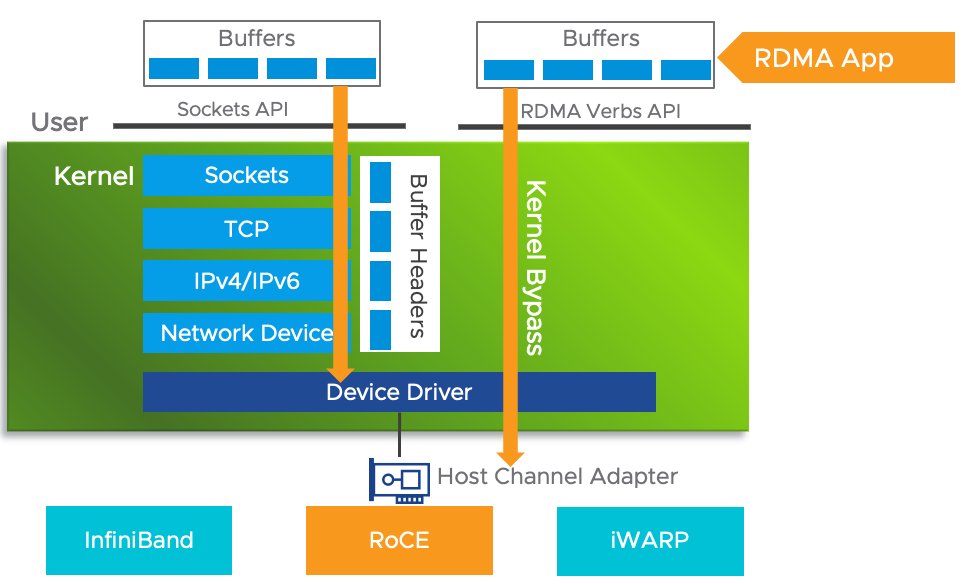
我们来捋一下传统网络数据传输需要哪些步骤：
数据发送方：
- 数据从用户空间 Buffer copy 到内核空间的 Socket Buffer
- 数据在内核空间中加上了数据包头部，进行数据封装
- 最终封装好的数据包从内核 Socket Buffer 通过 DMA 传输到 NIC 发送队列
显然上述做法存在很大的网络时延，带来了两个问题：
- 需要 CPU 多次介入，大量消耗 CPU 性能
- 至少有两次 copy，严重限制了网络带宽
其实，超算的硬件是目前地球上计算机的顶配，对应的技术自然也是最先进的，人们早就研究出了所谓的 InfiniBand（无限带宽技术）来优化超算的网络。
我们需要思考的是如何将这种技术用在现在更大规模的网络和 AI 训练推理中。
人们提出了多种方案，我们介绍其中的两种： TOE 和 RDMA
TOE （TCP/IP 协议处理工作从 CPU 转移到网卡）
这是一种将 TCP/IP 协议处理工作从 CPU 转移到网卡的技术，解决了上面我们提到的问题1。
TOE(TCP Offloading Engine)，在主机通过网络进行的传输的过程中，CPU 需要耗费大量的资源进行多层网络协议的数据包处理，包括数据复制、协议处理和中断处理。为了将 CPU 从这些操作中解放出来，人们发明了 TOE 技术，将上述工作从 CPU 转移到了专门的网卡上。TOE 技术需要特定支持 Offloading 的网卡，这种特定网卡能够支持封装多层网络协议的数据包。
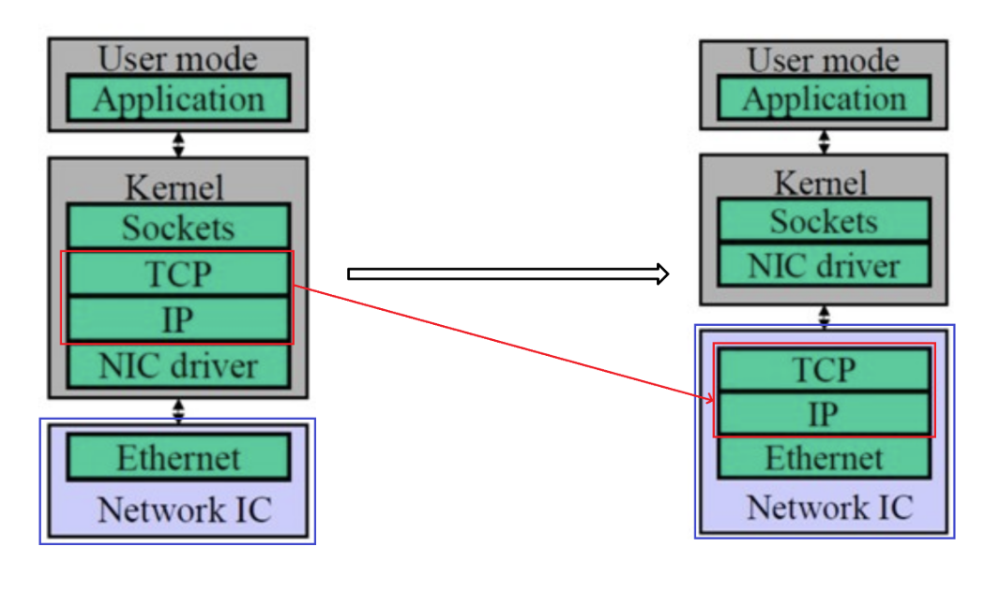
- TOE 技术将原来在协议栈中进行的IP 分片、TCP 分段、重组、checksum 校验等操作，转移到网卡硬件中进行，降低系统 CPU 的消耗，提高服务器处理性能。
- 传统的普通网卡处理每个数据包都要触发一次中断，TOE 网卡则让每个应用程序完成一次完整的数据处理进程后才触发一次中断，显著减轻服务器对中断的响应负担。
- TOE 网卡在接收数据时，在网卡内进行协议处理，因此，它不必将数据复制到内核空间缓冲区，而是直接复制到用户空间的缓冲区，这种“零拷贝”方式避免了网卡和服务器间的不必要的数据往复拷贝。
RDMA (绕过CPU，数据直接’传’到对端内存)
TOE 技术只支持 TCP/IP 协议栈，为了进一步优化网络，我们需要绕开 TCP，使用一种自己设计的全新的协议，这样更快，在更小的网络范围内可以使得协议栈更精简。
TOE vs RDMA 对比：
| 特性 | 传统网络 | TOE | RDMA |
|---|---|---|---|
| CPU 参与 | 高（多次中断+数据拷贝） | 低（协议处理卸载到网卡） | 极低（完全绕过内核） |
| 数据拷贝 | 至少 2 次 | 1 次（零拷贝到用户空间） | 0 次（直接内存访问） |
| 协议栈 | TCP/IP | TCP/IP | 自定义（IB/RoCE/iWARP） |
| 网络要求 | 通用 | 通用 | 部分需要无损网络 |
| 延迟 | 高 | 中 | 低 |
| 硬件成本 | 低 | 中 | 高 |
RDMA 利用 Kernel Bypass 和 Zero Copy 技术提供了低延迟的特性，同时减少了CPU占用，减少了内存带宽瓶颈，提供了很高的带宽利用率。RDMA提供了给基于 IO 的通道，这种通道允许一个应用程序通过 RDMA 网卡对远程的虚拟内存进行直接读写。
RDMA 技术有以下几个特点：
- CPU Offload：无需 CPU 干预，应用程序可以访问远程主机内存而不消耗远程主机中的任何 CPU。远程主机内存能够被读取而不需要远程主机上的进程（或 CPU)参与。远程主机的 CPU 的缓存(cache)不会被访问的内存内容所填充
- Kernel Bypass：RDMA 提供一个专有的 Verbs interface 而不是传统的 TCP/IP Socket interface。应用程序可以直接在用户态执行数据传输，不需要在内核态与用户态之间做上下文切换
- Zero Copy：每个应用程序都能直接访问集群中的设备的虚拟内存，这意味着应用程序能够直接执行数据传输，在不涉及到网络软件栈的情况下，数据能够被直接发送到缓冲区或者能够直接从缓冲区里接收，而不需要被复制到网络层。
最后的数据包结构如下图所示：
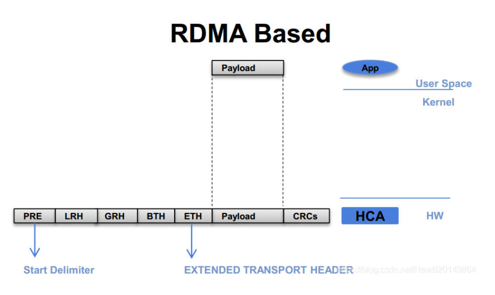
报文结构（从左到右）
- PRE：前缀（Start Delimiter），用于标识报文开始。
- LRH：本地路由头（Local Routing Header），用于本地子网内的路由。
- GRH：全局路由头（Global Routing Header），用于跨子网的路由。
- BTH：基础传输头（Base Transport Header），定义 RDMA 操作类型（如读、写、发送）。
- ETH：以太网帧头（如果 RDMA 运行在以太网之上，即 RoCE 协议）。
- Payload：要传输的实际数据。
- CRCs：循环冗余校验码，用于数据完整性校验。
其中，LRH + GRH + BTH + ETH 合称为 EXTENDED TRANSPORT HEADER（扩展传输头）。
RDMA 是一种设计模式，对应着可以有不同的具体的实现，目前主流有三种：
-
InfiniBand(IB): 基于 InfiniBand 架构的 RDMA 技术，需要专用的 IB 网卡和 IB 交换机。从性能上，很明显 Infiniband网络最好，但网卡和交换机是价格也很高。
-
RoCE：即 RDMA over Ethernet(RoCE), 基于以太网的 RDMA 技术，也是由 IBTA 提出。RoCE 支持在标准以太网基础设施上使用 RDMA 技术，但是需要交换机支持无损以太网传输，只不过网卡必须是支持 RoCE 的特殊的 NIC。
-
iWARP：Internet Wide Area RDMA Protocal，基于 TCP/IP 协议的 RDMA 技术(在现有 TCP/IP 协议栈基础上实现 RDMA 技术,在 TCP 协议上增加一层 DDP)，由 IETF 标准定义。iWARP 支持在标准以太网基础设施上使用 RDMA 技术，而不需要交换机支持无损以太网传输，但服务器需要使用支持 iWARP 的网卡。与此同时，受 TCP 影响，性能稍差。
三种 RDMA 实现对比：
| 特性 | InfiniBand | RoCEv1 | RoCEv2 | iWARP |
|---|---|---|---|---|
| 网络层 | L2（链路层） | L2（链路层） | L3（UDP/IP） | L4（TCP/IP） |
| 路由支持 | ❌ 仅子网内 | ❌ 仅子网内 | ✅ 可路由 | ✅ 可路由 |
| 无损网络要求 | ✅ 需要 | ✅ 需要 | ✅ 需要 | ❌ 不需要 |
| 性能 | 最高 | 高 | 高 | 中 |
| 硬件成本 | 最高（专用设备） | 中（RoCE 网卡） | 中（RoCE 网卡） | 低（iWARP 网卡） |
| 网络环境 | 专用 IB 网络 | 以太网 | 以太网 | 以太网/广域网 |
| 适用场景 | 超算中心 | 数据中心内部 | 数据中心/跨机房 | 广域网/混合云 |
显然，IB 技术就是我们上面提到的，用在超级计算机中的，本着只求最强，完全不看性价比，什么都得定制化，所以性能最强，也是实际使用中无法接受的，只能作为一种性能标杆来衡量我们 trade off 的方案的性能怎么样
而 RoCE 可以被认为是 IB 技术的低成本的解决方案，本质上就是显示情况下，基本都是以太网络，我们将协议栈兼容现有的以太网络协议，这样可以更好的直接在我们现有的网络中使用，当然由于为了兼容，肯定要牺牲部分的性能，RoCE协议存在RoCEv1 （RoCE）和RoCEv2 （RRoCE）两个版本，主要区别：
-
RoCEv1是在以太网链路层（L2）之上用 IB 网络层代替了 TCP/IP 网络层实现的 RDMA 协议(交换机需要支持PFC等流控技术，在物理层保证可靠传输)，所以不支持IP路由功能。
-
RoCEv2是使用以太网 TCP/IP 协议中 UDP+IP 作为IB 网络层(L3)实现,基于 TCP/IP协议的网络层(L3)使得 RoCEv2 数据包可以被路由。(也可在三层做 PFC）
而 iWARP 显然是为了再更宽泛的现有网络中使用，支持了广域网，同时由于 TCP 协议支持了流量和拥塞控制，因此不需要无损传输，当然性能也是最差的
云原生资源编排与调度架构
K8S
AI 编译计算架构
编译技术是计算机科学皇冠上的一颗明珠，作为基础软件中的核心技术，程序员的终极追求是能够掌握编译器相关的技术。
简单的说，编译器其实只是一段程序，它用来将编程语言 A 翻译成另外一种编程语言 B，上面将源代码翻译为目标代码的过程是叫作编译（compile）。完整的编译过程通常包含词法分析、语法分析、语义分析、中间代码生成、优化、目标代码生成等步骤。我们很难想象，在没有出现编译器的时候，程序员编程是有多么的困难。

传统编译器
基本概念
首先我们来了解一部分编译器的基本概念
Compiler && Interpreter
我们来看看什么是 Compiler 和 Interpreter:
| Compiler 编译器 | Interpreter 解释器 | |
|---|---|---|
| 程序步骤 | 1. 创建代码 2. 将解析或分析所有语言语句的正确性 3. 将源代码转换为机器码 4. 链接到可运行程序 5. 运行程序 |
1. 创建代码 2. 没有文件链接或机器代码生成 3. 源语句在执行过程中逐行执行 |
| Input | 整个程序 | 每次读取一行 |
| Output | 生成中间目标代码 | 不产生任何的中间代码 |
| 工作机制 | 编译在执行之前完成 | 编译和执行同时进行 |
| 存储 | 存储编译后的机器代码在机器上 | 不保存任何机器代码 |
| 执行 | 程序执行与编译是分开的，它只在整个输出程序编译后执行 | 程序执行是解释过程的一部分，因此是逐行执行的 |
| 生成程序 | 生成可以独立于原始程序运行的输出程序（以exe的形式） | 不生成输出程序，所以他们在每次执行过程中都要评估源程序 |
| 修改 | 如果需要修改代码，则需要修改源代码，重新编译 | 直接修改就可运行 |
| 运行速度 | 快 | 慢 |
| 内存 | 内存需求更多的是由于目标代码的创建 | 它需要较少的内存，因为它不创建中间对象代码 |
| 错误 | 编译器在编译时显示所有错误和警告。因此，不修正错误就不能运行程序 | 解释器读取一条语句并显示错误。你必须纠正错误才能解释下一行 |
| 错误监测 | 难 | 容易 |
| 编程语言 | C, C++, C#, Scala, Java | PHP, Perl, Python, Ruby |
目前主流如 LLVM 和 GCC 等经典的开源编译器的类型分为前端编译器、中间层编译器、后端编译器。
- 编译器的分析阶段也称为前端编译器，将程序划分为基本的组成部分，检查代码的语法、语义和语法，然后生成中间代码。
- 中间层主要是对源程序代码进行优化和分析，分析阶段包括词法分析、语义分析和语法分析；优化主要是优化中间代码，去掉冗余代码、子表达式消除等工作。
- 编译器的合成阶段也称为后端，针对具体的硬件生成目标代码，合成阶段包括代码优化器和代码生成器。
| AOT | JIT | |
|---|---|---|
| 全称 | Ahead of Time（提前编译） | Just in Time（即时编译） |
| 方式 | 静态编译 | 动态解释 |
| 核心组件 | 编译器 Compiler | 解释器 Interpreter |
| 区分方式 | 代码执行前需要编译 | |
| 优点 | 1. 运行前完成编译，避免运行时的编译开销和内存消耗 2. 程序启动即可达到最高性能 3. 整体执行效率更高 |
1. 可根据当前硬件环境实时生成最优机器指令 2. 可根据程序运行状态动态优化指令序列 3. 天然支持动态链接，灵活性更强 4. 可根据进程内存实际情况动态调整代码，内存利用率更高 |
| 缺点 | 1. 提前编译会增加程序的安装/构建时间 2. 需要持久化编译产物，占用更多磁盘和内存 3. 难以支持动态特性，牺牲了高级语言的跨平台一致性 |
1. 编译过程占用运行时资源，可能导致程序卡顿 2. 编译时间有限，部分代码无法完成深度优化 3. 启动阶段需要识别热点代码，冷启动性能较差 |
Pass
Pass 是对编译对象（源代码或 IR）的一次完整遍历和处理。在编译器中，Pass 指所采用的一种结构化技术，用于完成编译对象的分析、优化或转换等功能。Pass 的执行就是编译器对编译单元进行分析和优化的过程，Pass 构建了这些过程所需要的分析结果。
对于早期编译器，由于内存有限，不可能一次把所有事情做完，所以需要多次扫描源程序：
源代码文件（存在磁带/磁盘上）
- 第 1 遍扫描（Pass 1）：从头读到尾 → 做词法分析，生成 token 流
- 第 2 遍扫描（Pass 2）：从头读到尾 → 做语法分析，生成语法树
- 第 3 遍扫描（Pass 3）：从头读到尾 → 做语义检查，类型检查
- 第 4 遍扫描（Pass 4）：从头读到尾 → 生成目标代码
每一遍都是对整个程序从头到尾读一次，这就叫做 “一次完整扫描”。
所以早期会说一个编译器是：
- 单遍编译器（Single-Pass Compiler）：只扫描一遍就完成所有工作
- 多遍编译器（Multi-Pass Compiler）：需要扫描多遍
而在现代编译器（如 LLVM）中，Pass 不再直接扫描源代码文本了，而是扫描/处理 IR（中间表示）
本质上一次 Pass 就是对整个编译对象从头到尾遍历一遍，做一件特定的事情，来完成某一类功能。早期扫描源代码，现代扫描 IR，本质是一样的。
一个 Pass 通常会完成一项较为独立的功能，例如 LoopUnroll Pass 会进行循环展开的操作。但 Pass 与 Pass 之间可能会存在一些依赖，部分 Pass 的执行会依赖于其它一些 Pass 的分析或者转换结果。
现代编译器中，一般会采用分层、分段的结构模式，不管是在中间层还是后端，都存在若干条优化的 Pipeline，而这些 Pipeline，则是由一个个 Pass 组成的，对于这些 Pass 的管理，则是由 PassManager 完成的。
在编译器 LLVM 中提供的 Pass 分为三类：Analysis pass、Transform pass 和 Utility pass。
- Analysis Pass：计算相关 IR 单元的高层信息，但不对其进行修改。这些信息可以被其他 Pass 使用，或用于调试和程序可视化。换言之，Analysis Pass 会从对应的 IR 单元中挖掘出需要的信息，然后进行存储，并提供查询的接口，让其它 Pass 去访问其所存储的信息。同时，Analysis Pass 也会提供 invalidate 接口，因为当其它 Pass 修改了 IR 单元的内容后，可能会造成已获取的分析信息失效，此时需调用 invalidate 接口来告知编译器此 Analysis Pass 原先所存储的信息已失效。常见的 Analysis Pass 有 Basic Alias Analysis、Scalar Evolution Analysis 等。
- Transform Pass：可以使用 Analysis Pass 的分析结果，然后以某种方式改变和优化 IR。此类 Pass 是会改变 IR 的内容的，可能会改变 IR 中的指令，也可能会改变 IR 中的控制流。例如 Inline Pass 会将一些函数进行 inline 的操作，从而减少函数调用，同时在 inline 后可能会暴露更多的优化机会。
- Utility Pass：是一些功能性的实用程序，既不属于 Analysis Pass，也不属于 Transform Pass。例如，extract-blocks Pass 将 basic block 从模块中提取出来供 bug point 使用，它仅完成这项工作。
IR
IR（Intermediate Representation）中间表示，是编译器中很重要的一种数据结构。编译器在完成前端工作以后，首先生成其自定义的 IR，并在此基础上执行各种优化算法，最后再生成目标代码。
从广义上看，编译器运行过程中，各阶段产生的中间数据表示都可以统称为 IR。从狭义上讲，IR 是指编译器明确定义的一种具体的数据结构。这种数据结构存在两种等价的形式：一种是内存中的对象表示，供编译器程序直接操作；另一种是可读的文本表示，可以写入文件、供人阅读，也可以被编译器重新读入还原为内存对象。日常使用中，一般不严格区分这两种形式，统称为 IR。
在编译原理中，通常将编译器分为前端和后端。其中，前端会对所输入的程序进行词法分析、语法分析、语义分析，然后生成中间表达形式 IR。后端会对 IR 进行优化，然后生成目标代码。
当然，也有些人会感觉把优化器硬塞进"后端"其实不太舒服，因为很多优化（常量折叠、死代码消除等）跟目标机器完全无关，和后端做的指令选择、寄存器分配性质很不一样。所以后来业界更常用三段式划分。
例如： LLVM 将编译器拆分为前端、优化器和后端三个部分，各部分通过一种统一的中间表示（IR）来衔接。前端负责将源代码翻译为 IR，优化器对 IR 进行变换和优化，后端再将 IR 转化为目标平台的机器码。
LLVM IR 在内存中是一组 C++ 对象，其对应的文本形式称为 LLVM assembly language（也叫 LLVM language），保存为 .ll 文件。当我们谈论"LLVM IR 的类型系统"时，通常就是指 LLVM assembly language 中定义的那套类型语法。
因此，编译器的前端，优化器，后端之间，唯一交换的数据结构类型就是 IR，通过 IR 来实现不同模块的解耦。有些 IR 还会为其专门起一个名字，比如：Open64 的 IR 通常叫做 WHIRL IR，方舟编译器的 IR 叫做 MAPLE IR，LLVM 则通常就称为 LLVM IR。
IR 在通常情况下有两种用途：
- 一种是用来做分析和变换
- 一种是直接用于解释执行
编译器中，基于 IR 的分析和处理工作，前期阶段可以基于一些抽象层次比较高的语义，此时所需的 IR 更接近源代码。而在编译器后期阶段，则会使用低层次的、更加接近目标代码的语义。基于上述从高到低的层次抽象，IR 可以归结为三层：高层 HIR、中间层 MIR 和底层 LIR。
- HIR
HIR（High IR）高层 IR，其主要负责基于源程序语言执行代码的分析和变换。假设要开发一款 IDE，主要功能包括：发现语法错误、分析符号之间的依赖关系（以便进行跳转、判断方法的重载等）、根据需要自动生成或修改一些代码（提供重构能力）。此时对 IR 的需求是能够准确表达源程序语言的语义即可。
其实，AST 和符号表就可以满足上述需求。也就是说，AST 也可以算作一种特殊的 IR。如果要开发 IDE、代码翻译工具（从一门语言翻译到另一门语言）、代码生成工具、代码统计工具等，使用 AST（加上符号表）即可。基于 HIR，可以执行高层次的代码优化，比如常数折叠、内联关联等。在 Java 和 Go 的编译器中，有不少基于 AST 执行的优化工作。
- MIR
MIR（Middle IR），独立于源程序语言和硬件架构执行代码分析和具体优化。大量的优化算法是通用的，没有必要依赖源程序语言的语法和语义，也没有必要依赖具体的硬件架构。这些优化包括部分算术优化、常量和变量传播、死代码删除等，实现分析和优化功能。
因为 MIR 跟源程序代码和目标程序代码都无关，所以在编译优化算法（Pass）过程中，通常是基于 MIR，比如三地址代码（Three Address Code，TAC）。
- LIR
LIR（Low IR），依赖于底层具体硬件架构做优化和代码生成。其指令通常可以与机器指令一一对应，比较容易翻译成机器指令或汇编代码。因为 LIR 体现了具体硬件（如 CPU）架构的底层特征，因此可以执行与具体 CPU 架构相关的优化。
上面这种将 IR 阶段拆分为多层 IR 的方式和单层 IR 比较起来，具有较为明显的优点：
- 可以提供更多的源程序语言的信息
- IR 表达上更加地灵活，更加方便优化
- 使得优化算法和优化 Pass 执行更加高效
如在 LLVM 编译器里，会根据抽象层次从高到低，采用了前后端分离的三段结构，这样在为编译器添加新的语言支持或者新的目标平台支持的时候，就十分方便，大大减小了工程开销。而 LLVM IR 在这种前后端分离的三段结构之中，主要分开了三层 IR，IR 在整个编译器中则起着重要的承上启下作用。从便于开发者编写程序代码的理解到便于硬件机器的理解。
完整构建流程
我们首先需要区分编译器和工具链。
编译器只是负责从源码 → 目标平台的机器码
而用户使用却是需要从 源码 → 目标平台的可执行文件，这就需要一系列工具，不单单只有编译器，这样一个完整的构建流程需要的是完整的工具链。
接下来我们来看看，一个代码源文件，是怎么一步步的变成最终我们想要的可执行文件的？
|
|
我们之前讲的编译器最核心的前端、优化器和后端，其实就是对应的上面编译阶段。
一个源代码程序
- 首先会被送入编译器，被编译成
.s汇编代码 - 然后再经过汇编器，变成
.o二进制机器码，但是此时目标文件是不完整的，还有大量"空白地址"等待填写 - 最后再经过链接器，变成我们要的对应平台的可执行文件
对于 C 和 C++，由于历史原因，额外多了一步，也就是先将源代码通过预处理变成
.i文件，然后才送入编译器，进行后续操作。这不是所有语言的必要操作，现代语言都是直接把源代码送入前端。以及对于现代的 Java 和 Python 等语言，它们不是传统的编译型语言，而是一种托管型语言。通过自己实现的 JVM/V8 等工具，来自己实现自己想要的。
而汇编器和链接器也有非常多的种类，可以指定搭配着使用。
了解完上面的基础概念以后，接下来我们来看看现代编译器领域两大框架的“相爱相杀”：
GCC
我们首先来看看 GCC 的起源：
早期的 UNIX 系统是商业私有软件，用户无法自由查看和修改其源代码。1983 年，理查德·斯托曼发起了 GNU 计划，目标是开发一套完全自由开放的操作系统来替代 UNIX，计划中的操作系统命名为 GNU。这里的"自由"强调的不是免费，而是用户拥有查看、修改和分发源代码的权利——正如斯托曼所说：“Free as in freedom, not as in free beer（自由如同言论自由，而非免费啤酒）。”

一个完整的操作系统不只需要内核，还需要编辑器、编译器、Shell 等大量配套工具来支持用户的日常使用。GNU 计划十几年来陆续开发了这些工具，其中许多至今仍被广泛使用，例如 GCC 编译器、Bash Shell、GNU Coreutils 等。GNU 计划也采用了部分当时已经可自由使用的软件，例如 TeX 排版系统和 X Window 视窗系统。这些软件后来也被移植到了其他操作系统平台上，包括 Microsoft Windows、BSD 家族、Solaris 及 macOS。
不过，GNU 计划自己的内核 Hurd 一直未能成熟。1991 年，Linus Torvalds 独立开发的 Linux 内核填补了这个空缺。Linux 内核与 GNU 的用户态工具相结合，形成了今天广泛使用的 GNU/Linux 操作系统。GNU 计划本是为了开发一个完整的自由操作系统，最终虽然没能交出自己的内核，但它所开发的编译器、Shell 等基础工具却成为了整个开源世界的基石，广泛使用至今。
GCC 是 GNU 计划中最成功的项目之一。它最初名为 GNU C Compiler，只能编译 C 语言，后来逐步扩展，支持了 C++、Fortran、Pascal、Objective-C、Java、Ada、Go 等多种语言，也因此更名为 GNU Compiler Collection（GNU 编译器集合）。
GCC 原本使用 C 语言开发。后来随着 LLVM/Clang 的崛起带来竞争压力，GCC 社区加快了将自身代码库迁移至 C++ 的进程。GCC 核心开发者 Ian Lance Taylor 对此表示：C++ 不但性能不输给 C，还能设计出更好、更容易维护的程序。
由于 GCC 已成为 GNU 系统的官方编译器（包括 GNU/Linux 家族），它也成为编译与构建其他操作系统的主要编译器，包括 BSD 家族、Mac OS X、NeXTSTEP 与 BeOS。GCC 通常是跨平台软件的编译器首选——有别于一般局限于特定系统与运行环境的编译器，GCC 在所有平台上都使用同一套前端和中间表示（IR），因此同一份代码在不同平台上使用 GCC 编译，有很大的机会得到正确一致的输出。
对于 GCC 来说，它的前端和后端由于历史原因，是一种深度耦合的状态。因此如果想要支持 $M$ 种语言和 $N$ 种目标机，理论上就需要实现 $MN$ 种编译器。。。
然后如果一个人想要重新设计一门语言，还想用 GCC 来编译，他就得又懂前端又懂优化又懂后端，这是什么天才？
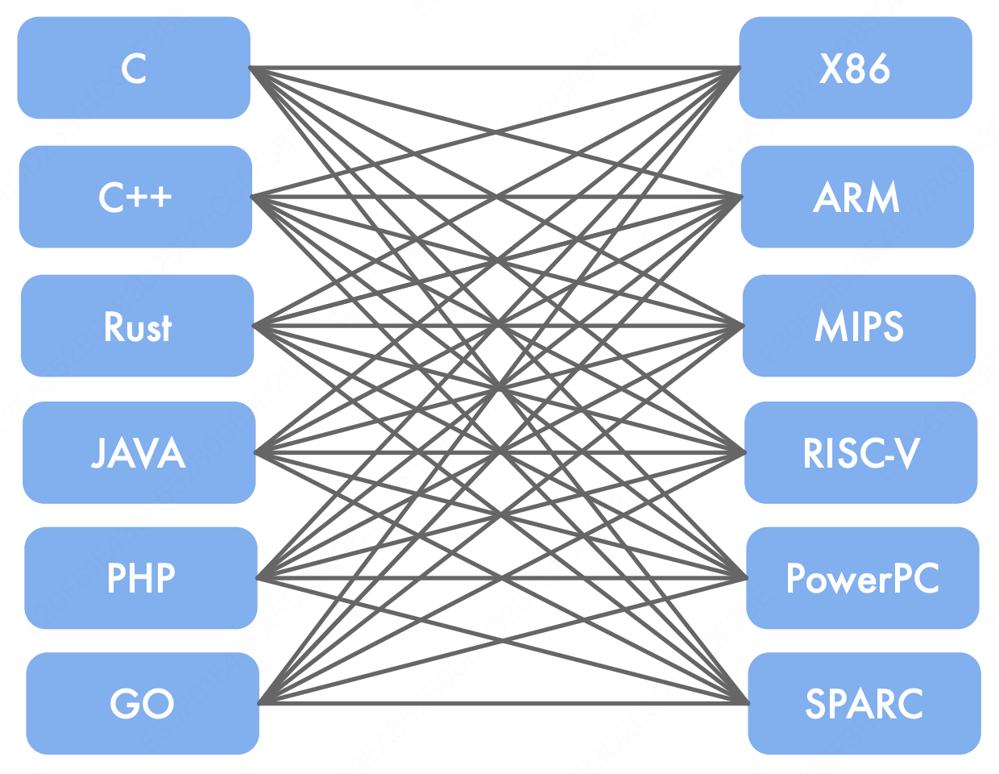
因此现在的 GCC 源码已经超过 $1500$ 万行了，是现存最大的自由程序之一，已经快成为一座屎山代码了。
当然 GCC 也是有它独特的优势的（不然用它的人也不傻）：
- 由于 GCC 的历史比 LLVM 要长很多，因此 GCC 的架构支持要更多，很多冷门的嵌入式架构依旧只有 GCC 支持
- GCC 对于某些特定领域（如数值计算）深耕多年，速度比 LLVM 要快很多
- GCC 年龄大更成熟
- GCC 警告体系更精准
- 以及由于 LLVM 都需要先从源语言转成 LLVM IR，大量的高级语言特性丢失了，这些可以被 GCC 利用从而进行加速
当然我认为长期趋势是 LLVM 生态越来越强，但 GCC 在嵌入式和特定架构领域短期内不会被取代。
LLVM
Apple 早期一直使用 GCC 作为官方编译器。但随着发展，双方出现了矛盾：
一方面，Apple 为 Objective-C 新增了许多语言特性，但 GCC 社区对这些特性的支持意愿不高。Apple 不得不基于 GCC 的某个版本维护自己的分支，导致其编译器版本逐渐落后于 GCC 官方版本。
另一方面，Apple 希望以模块化的方式调用编译器的各个组件（如为 IDE 提供代码补全、语法高亮等功能），但 GCC 的架构耦合度很高，难以拆分为独立的库来使用。
与此同时，故事中的另一个主人公 Chris Lattner 在伊利诺伊大学读 phd 期间（2000 年）发起了 LLVM 项目，探索模块化、可复用的编译器架构。Apple 看到了 LLVM 的潜力，于 2005 年将 Lattner 招入，并投入资源大力发展 LLVM。
项目最初被命名为低级虚拟机（Low Level Virtual Machine）的首字母缩写。然而，随着 LLVM 项目的发展，该缩写引起了混淆，因为项目范围不仅局限于创建虚拟机。随着 LLVM 发展壮大，它成为了许多编译工具和低级工具技术的统称，这使得缩写变得不再合适。于是开发者决定摒弃缩写的含义，现在 LLVM 已经成为一个品牌，用于指代 LLVM 项目下的所有子项目，包括 LLVM 中介码（LLVM IR）、LLVM 调试工具、LLVM C++标准库等。
最初，Apple 采用 GCC 前端 + LLVM 后端的过渡方案（称为 LLVM-GCC）。随后，Apple 支持开发了全新的 C/C++/Objective-C 前端——Clang，至此彻底摆脱了对 GCC 的依赖。
LLVM (Low Level Virtual Machine) 的出现，可以让任意编程语言前端编译到一个 LLVM 的中间表示（IR），再由 LLVM 中的后端编译至具体硬件平台，并且可以分不同阶段实现优化。
LLVM 极大地简化了编程语言编译器的开发过程，不同语言只需要实现语言到 LLVM IR 的前端编译程序，再调用 LLVM 后端编译器，就可以得到编译至任意平台的能力，而无需为不同的平台实现不同的编译器。如 Rust 和 Swift 语言的编译器就使用了 LLVM 作为后端。
接下来我们拆开 LLVM，来看看它是怎么优雅的解决 GCC 的许多问题的。
首先对比 GCC，LLVM 如果想要支持 $M$ 种语言和 $N$ 种目标机，理论上只需要实现 $M+N$ 种编译器就可以了。它是通过设计了一个中间统一的 LLVM IR，来将前端和后端进行解耦，降低了系统整体的复杂度。
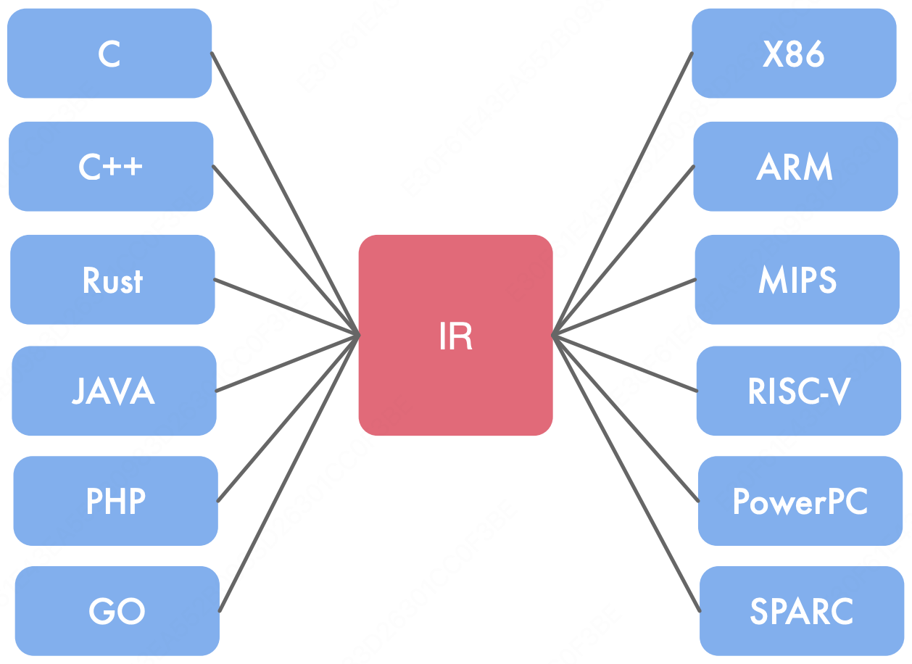
LLVM 基本架构如下：
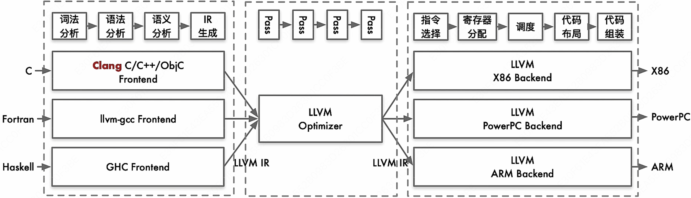
值得注意的是，LLVM 并非使用单一的 IR 进行表达，前端传给优化层时传递的是一种 AST（Abstract Syntax Tree，抽象语法树）的 IR。因此 IR 是一种抽象表达，没有固定的形态。
在中端优化完成之后会传一个 DAG（Directed Acyclic Graph，有向无环图）图的 IR 给后端，DAG 图能够非常有效的去表示硬件的指定的顺序。
接下来我们将分别介绍 LLVM 的前端、优化器和后端是怎么实现的：
前端
LLVM 的前端也就是将源代码变成统一的中间表示 LLVM IR 的过程。
我们以经常作为 LLVM 前端使用的的 Clang 为例，看看具体发生了什么。
Clang 是一个强大的编译器工具，作为 LLVM 的前端承担着将 C、C++ 和 Objective-C 语言代码转换为 LLVM 中间表示（IR）的任务。
从上面的 LLVM 基本架构图可以看出来： 通过 Clang 的三个关键步骤：词法分析、语法分析和语义分析，源代码被逐步转化为高效的中间表示形式，为进一步的优化和目标代码生成做准备。
- 词法分析阶段负责将源代码分解为各种标记的流，例如关键字、标识符、运算符和常量等，这些标记构成了编程语言的基本单元。
- 语法分析阶段则负责根据编程语言的语法规则，将这些标记流组织成符合语言语法结构的语法树。
- 语义分析阶段则确保语法树的各部分之间的关系和含义是正确的，比如类型匹配、变量声明的范围等，以确保程序的正确性和可靠性。
每个编程语言前端都会有自己的词法分析器、语法分析器和语义分析器，它们的任务是将程序员编写的源代码转换为通用的抽象语法树（AST），这样可以为后续的处理步骤提供统一的数据结构表示。AST 是程序的一个中间表示形式，它便于进行代码分析、优化和转换。
下面我们来详细看看这几个阶段：
词法分析
词法分析就是把源码字符流切割成有意义的最小单元(token)，来方便后续更深度的代码分析。
我们来写一个简答的 C 语言程序：
|
|
执行以下命令对 add.c 文件进行词法分析：
|
|
词法分析输出如下：
|
|
我们来逐行解读一下上面的输出：
1 2 3 4 5 6 7 8 9 10 11 12 13 14 15 16 17 18 19 20 21 22 23 24 25 26 27 28 29 30 31 32 33 34 35 36 37 38 39 40 41 42 43 44 45 46 47 48 49 50 51 52 53 54 55 56 57 58 59 60 61 62 63 64 65 66 67 68 69 70 71 72 73 74 75int 'int' [StartOfLine] Loc=<add.c:1:1> │ │ │ │ │ │ │ └── 第1行第1列 │ │ └── 这个Token在行首 │ └── 实际文本是 'int' └── Token类型是关键字int identifier 'main' [LeadingSpace] Loc=<add.c:1:5> │ │ │ │ │ │ │ └── 第1行第5列 │ │ └── 前面有空格 (int 和 main 之间) │ └── 实际文本是 'main' └── Token类型是标识符 l_paren '(' Loc=<add.c:1:9> └── 左括号，没有flag说明紧跟在main后面，没有空格 r_paren ')' Loc=<add.c:1:10> └── 右括号，紧跟左括号 l_brace '{' [LeadingSpace] Loc=<add.c:1:12> └── 左花括号，前面有空格 () 和 { 之间有空格 int 'int' [StartOfLine] [LeadingSpace] Loc=<add.c:2:5> │ │ │ └── 前面有空格（缩进） └── 在行首 注意：同时有 StartOfLine 和 LeadingSpace → 说明这行有缩进（行首+有空格） identifier 'a' [LeadingSpace] Loc=<add.c:2:9> └── 变量名 a，int 和 a 之间有空格 equal '=' [LeadingSpace] Loc=<add.c:2:11> └── 赋值符号，前面有空格 numeric_constant '1' [LeadingSpace] Loc=<add.c:2:13> └── 数字字面量 1，不是 integer！ 因为词法分析阶段还不确定是int还是long 统一叫 numeric_constant plus '+' [LeadingSpace] Loc=<add.c:2:15> └── 加号运算符 numeric_constant '2' [LeadingSpace] Loc=<add.c:2:17> └── 数字字面量 2 return 'return' [StartOfLine] [LeadingSpace] Loc=<add.c:3:5> └── return关键字，行首+有缩进 identifier 'a' [LeadingSpace] Loc=<add.c:3:12> └── 变量名 a，return 和 a 之间有空格 semi ';' Loc=<add.c:3:13> └── 紧跟a，没有空格 r_brace '}' [StartOfLine] Loc=<add.c:4:1> └── 右花括号，在行首，第1列 没有LeadingSpace → 没有缩进，顶格写的 eof '' Loc=<add.c:4:2> └── 文件结束标记 不是真实字符，是词法分析器自动添加的 告诉后续阶段"没有更多Token了" 位置在}的下一列
因此我们可以知道，词法分析器做了哪些事情：
- 识别 Token 类型
- 给每一个 Token 都附带位置信息（方便后面的代码分析和打印输出具体的报错位置信息等）
- 去掉无意义的内容 (如空格、制表符、换行符、注释等)
而这里具体的实现其实也很简单，也就是简单的字符串处理，从一段文本中进行 Token 提取，一道 mid 算法题吧
当然，词法分析器的输出本质上还在内存中，它是以对象形式，类似于下面这样的 Token 对象流的形式：
|
|
当然， Clang 源码中实际的 Token 定义是和上面不一样的，它做了很多优化，可以参考
clang/include/clang/Lex/Token.h。比如它这里的位置信息就用offset偏移量来达到减少内存消耗，数据指针也做了一层类型封装。以及 Clang 的词法分析器是 pull 模式（按需拉取） 的，不是一次性生成全部 Token，而是 Parser 每次问 Lexer “给我下一个”，Lexer 才扫描出一个。这样做的好处是内存占用小，而且可以和预处理器（宏展开、#include）无缝配合。
做完上面这一切，我们就进入了语法分析器
语法分析
有了上面词法分析输出的这么多 Token 流，我们就需要对这么多 Token 进行分组标记。
词法分析给我们的是一个扁平的序列： [int][a][=][1][+][2][;][return][a][;]
这个序列是一维的,没有任何层次结构,我们并不知道哪些Token是一组的
而这里计算机同样不知道如何分组——我们需要为它提供一套形式化的规则，即文法(我们在形式化方法1中讲过)，语法分析器据此将 Token 序列组织成树形结构。
这样语法分析器就可以一个个遍历读取 Token，针对比如 C 语言的文法进行匹配，然后匹配成这样一棵树：
|
|
这样语法分析可以简单验证它的结构符不符合语法规则，检测出一些简单的语法错误。
比如我们有这样一个文法规则： 声明语句 = 类型 变量名 = 表达式 ;
然后我们再匹配 int a = 1 的时候就会发现它缺少 ;，直接就可以报错。
对于语法分析器而言，并不需要深入分析代码的含义，只需验证其代码结构是否符合语法规则。
这里我们需要说明的是，由于 Clang 的设计里，语法分析和语义分析是交织在一起的，边语法分析边语义分，解析一个节点，立刻做语义检查，两者同时进行。因此我们无法单独拿到语法分析的 AST 结果，因此也无法实际看看语法分析的结果。
这样的一棵 AST 树似乎已经足够完善了，但是其实只是对代码结构进行了检验，代码的基本语法没问题了，它的含义和逻辑依旧有可能是错的。比如对同样的变量名声明了两次，这种错误就无法通过简单的文法来发现。
以及假设我们有 a = b + 1 这样的语句，由于我们在构建 AST 树的时候是通过一条语句一条语句的进行构建，因此也没有信息表示这里的 a 和 b 分别是什么类型的？这需要我们维护一份当前已有的符号信息，也就是我们下面在语义器中设计的符号表。因此还需要对这棵 AST 树进行信息的补充完善，这也就是我们下面的语义分析阶段做的事情。
语义分析
刚刚的语法分析器我们可以理解为构建这样一棵 AST 树，而下一步就是把这棵 AST 树送入语义分析器进行更深度的逻辑检查和补充完善，为后续生成 IR 做准备。
我们可以简单的认为： 语义分析器 = 符号表 (记录所有声明) + 类型系统 (知道所有类型规则) + AST遍历 (逐节点检查)
我们的语义分析需要对 AST 树上的每个节点，进行类型检查，同时在遍历节点时维护当前的符号表，方便进行判断。
符号表很简单，其实就是语义分析器内部会维护类似于下面这张表格，来方便我们在进行 AST 遍历时借助符号表来检验代码是否符合语言类型系统。
| 名字 | 类型 | AST节点 |
|---|---|---|
| a | int | VarDecl |
| add | 函数 | FuncDecl |
这样的话哪怕我们的定义变量和实际使用变量距离非常远，也可以通过这个符号表，来知道当前使用的变量是什么类型，来检查是否符合我们的类型系统，同时给当前使用变量的 AST 子树进行类型补充等。
当然，实际编程中我们经常会遇到更为复杂的作用域嵌套问题，比如我们有这样一段代码：
|
|
此时我们会发现单个符号表就不够用，那么有人会说，我们给上面的表再加上一个列来记录它的作用域不就好了？
但是仔细想想，这种方案会引入更多的问题和复杂度：
-
比如如果有两个不同的文件都有同名函数怎么办？
-
匿名块 {} 如何命名？如何为每个 {} 生成唯一 ID？
-
查找变量时需要知道"当前在哪个作用域"以及"它的所有祖先作用域是什么"，一列扁平的标识无法表达这种嵌套层级关系
-
退出作用域时需要遍历整张表删除相关条目，效率低下
这里可能有人会有疑问，两个 C 代码文件有同名函数不就是语法错误吗？不不不，我们要知道对于 C 语言来说每个代码文件是独立编译的，所以在编译期间不会产生问题，因为两个文件互相是透明的。但是聪明的你会说，我真的遇到过这个报错啊？
这是因为实际冲突发生在链接阶段： a.o + b.o → 链接器(ld) → 报错！
链接器要把所有 .o 合并成可执行文件，此时它发现两个 .o 里都导出了一个叫 foo 的符号，违反了 ODR（One Definition Rule，单一定义规则）
以及对于其他语言比如 Go 来说，它就不是每次对每个文件独立编译了，而是按照 package，所以直接编译期就会报错。
聪明的你会发现，这种后进先出的嵌套模式，是不是和栈这种数据结构很像？
因此我们可以利用栈来完美解决上面的问题：
- 当我们进入一个新的作用域时，就压入一个空的符号表；
- 每次查找符号时从栈顶向下逐层搜索；新增声明只写入栈顶的符号表
- 出栈时直接弹出当前符号表即可
因此上面的代码的符号表变化可以理解为下面这样：
|
|
而我们的类型系统可以简单理解为一套规则表，语义分析器遍历每个 AST 节点时都去查这张表：
| 遇到的情况 | 查表问 | 结果 |
|---|---|---|
| int + float | 这两个类型能做加法吗？ | 能，把 int 提升为 float |
| int = char* | 这两个类型能赋值吗？ | 不能，报错 |
| foo(int, float) 传了 (int) | 参数匹配吗？ | 数量不对，报错 |
| return a 中 a 是左值 | 能直接返回吗？ | 不能，插入 LValueToRValue 转换 |
| 修改 const 变量 | 允许吗？ | 不允许，报错 |
理解了上面的细节，接下来我们实际看看一个代码的 AST 结果长什么样：
执行以下命令对 add.c 文件进行语法分析和语义分析：
|
|
语法分析和语义分析输出如下：
|
|
不要看上面输出这么多怎么这么复杂，我们来逐行分析：
1 2 3 4 5 6 7 8 9 10 11 12 13 14 15 16 17 18 19 20 21 22 23 24 25 26 27 28 29 30 31 32 33 34 35 36 37 38 39 40 41 42 43 44 45 46 47 48 49 50 51 52 53 54 55 56 57 58 59 60 61 62前半部分：(你真正的代码之前) ├── TypedefDecl implicit __int128_t ├── TypedefDecl implicit __uint128_t ├── TypedefDecl implicit __SVInt8_t ├── TypedefDecl implicit __SVInt16_t ... 一大堆 implicit ↑ 注意这个关键词！ 全部都是 implicit = 编译器自动注入的，不是你写的 Clang 在处理任何文件之前会先向 AST 注入所有内置类型 后半部分：(你真正的代码) └── FunctionDecl main ← 这才是你的代码！ └── CompoundStmt ├── DeclStmt (int a = 1 + 2) └── ReturnStmt (return a) `-FunctionDecl 0x8cd1b59a8 <add.c:1:1, line:4:1> line:1:5 main 'int ()' ↑ ↑ ↑ ↑ ↑ ↑ └─ ` 表示 └─ 这个节点 └─ 这个函数在源码中 └─ 函数名 └─ 函数 └─ 节点 最后一个 在内存中 的完整范围 出现的 类型 类型 子节点 的地址 从add.c第1行第1列 位置在 (没有兄弟) (调试用) 到第4行第1列(大括号}) 第1行第5列 即整个函数体的范围 (int后面空格后的main) `-CompoundStmt 0x8cd1b5bd8 <col:12, line:4:1> ↑ ↑ ↑ └─ FunctionDecl └─ 内存地址 └─ 范围：从col:12到line:4:1 的最后一个 col:12 = 第1行第12列 就是 { 子节点 line:4:1 = 第4行第1列 就是 } |-DeclStmt 0x8cd1b5b78 <line:2:5, col:18> ↑ ↑ └─ | 表示还有兄弟节点 └─ 范围：第2行第5列 到 第2行第18列 (后面还有ReturnStmt) 即整个 int a = 1 + 2; 这一行 | `-VarDecl 0x8cd1b5ab0 <col:5, col:17> col:9 used a 'int' cinit ↑ ↑ ↑ ↑ ↑ ↑ ↑ └─ DeclStmt的 └─ 整个声明的 └─变量名 └─该变量 └─类型 └─有初始 最后子节点 范围 'a'的 被使用 值 col:5=int起始 精确位置 过 (cinit= col:17=2结束 第9列 constructor init) ... ... ... `-DeclRefExpr 0x8cd1b5b90 <col:12> 'int' lvalue Var 0x8cd1b5ab0 'a' 'int' ↑ ↑ ↑ ↑ ↑ ↑ └─位置 └─类型 └─这是 └─指向的变量 └─变量 └─变量 col:12 int 左值 的内存地址 名 类型 (a处) (还没 'a' int 转换前) 注意： Var 0x8cd1b5ab0 'a' 'int' ↑ 这个地址和第四行 VarDecl 0x8cd1b5ab0 完全一样！ 说明： DeclRefExpr 引用的就是之前声明的那个 VarDecl 两个节点通过地址互相关联！ 这就是 AST 中的引用关系
以上输出结果反映了对源代码进行语法分析和语义分析后得到的抽象语法树（AST）。AST 是对源代码结构的一种抽象表示，其中各种节点代表了源代码中的不同语法结构，如声明、定义、表达式等。这些节点包括：
-
TranslationUnitDecl:表示翻译单元节点，是整棵 AST 的根节点，对应一个完整的源文件，所有函数声明、全局变量声明以及编译器内置类型声明都作为其子节点挂载在此节点之下。 -
FunctionDecl：表示函数声明节点，包括函数名称、返回类型和参数信息。 -
CompoundStmt：表示由花括号{ }包裹的语句块，即函数体，内部可包含若干条子语句。 -
DeclStmt：表示声明语句，用于包裹一个或多个变量声明节点。 -
VarDecl：表示变量声明节点，包括变量名称、类型和初始化方式，used标注表示该变量在后续代码中被引用，cinit标注表示该变量含有初始化表达式。 -
BinaryOperator：表示二元运算表达式节点，包括运算符类型和运算结果的类型。 -
IntegerLiteral：表示整数字面量节点，记录字面量的具体数值和类型信息。 -
ReturnStmt：表示返回语句节点，包含一个子表达式作为返回值。 -
ImplicitCastExpr：表示编译器自动插入的隐式类型转换节点，源代码中无对应的显式代码，LValueToRValue表示将左值（内存地址）自动转换为右值（地址中存储的具体数值）。 -
DeclRefExpr：表示对已声明变量的引用节点，内部通过地址指回对应的VarDecl节点，建立变量使用和变量声明之间的关联关系。 -
函数调用表达式、声明引用表达式和隐式类型转换表达式等，用于描述不同的语法结构。
-
各种属性信息，如内联属性和 DLL 导入属性，用于描述代码的特性和行为。
这些节点之间通过边相连，反映了它们在源代码中的关系和层次。AST 为进一步的语义分析和编译过程提供了基础，是编译器理解和处理源代码的重要工具。
它的 AST 的图形样式也就长这样：
|
|
其实这里也有工具直接提供 AST 的图形视图，直接运行
clang -fsyntax-only -Xclang -ast-view add.c命令。但是需要 Clang Debug 版本以及 Graphviz 库，我的本地暂时没有就不演示了。
语义分析器的最终输出是类型无误的 AST，接下来还需要将它转换成 LLVM IR，然后才可以将它交给优化器去进行 IR 优化。
IR 生成
AST 还带着很多源语言的特征：
- for 循环节点
- if 语句节点
- while 循环节点
- class 定义节点 …
这些都是高级语言概念，IR 不认识这些， IR 只认识这些基本操作：算术运算、比较、跳转、内存读写、函数调用。因此需要把高级概念"降级"成这些基本操作
LLVM IR 具有三种表示形式，这三种中间格式是完全等价的：
- 内存中的 C++ 对象表示（编译器实际操作的就是这些对象，所有优化 Pass 都直接作用于它们）
- 在硬盘上存储的二进制中间语言（格式为
.bc） - 人类可读的文本形式（格式为
.ll）
本质上，编译器始终在内存中以 C++ 对象的形式操作和变换 LLVM IR，只是也提供了命令来让它可以直接落盘成文件形式，其中有纯二进制和方便人类阅读的文本形式，这样人们就可以通过阅读 .ll 文件来看看是否符合预期。
因此它们是等价的，所以可以随意进行互相转换：
|
|
接下里我们来看看 LLVM IR 文件到底长什么样，执行以下命令对 add.c 文件输出人类可读的 .ll 格式的 LLVM IR 文件：
|
|
编译完成后，生成的 .ll 文件内容如下：
|
|
在 LLVM IR 中，所生成的 .ll 文件的基本语法为：
- 指令以分号
;开头表示注释 - 全局表示以
@开头，局部变量以%开头 - 使用
define关键字定义函数，在本例中定义了两个函数：@test和@main alloca指令用于在堆栈上分配内存，类似于 C 语言中的变量声明store指令用于将值存储到指定地址load指令用于加载指定地址的值add指令用于对两个操作数进行加法运算i32表示 32 位（4 字节）整数类型align指定内存对齐方式ret指令用于从函数返回
LLVM IR 的设计理念类似于精简指令集（RISC），这意味着它倾向于使用简单且数量有限的指令来完成各种操作。其指令集支持简单指令的线性序列，比如加法、减法、比较和条件分支等。这使得编译器可以很容易地对代码进行线性扫描和优化。
LLVM IR 的设计原则：
- LLVM IR 采用 静态单赋值形式（SSA） 形式，每个变量在代码中只被赋值一次。SSA 简化的是数据流分析，进而帮助死代码消除、常量传播等。
- 为了和硬件平台解耦，LLVM IR 层不限制寄存器数量，默认有无限的寄存器，实际的寄存器分配交给后端处理
- 优化和扩展 LLVM IR 支持多种优化技术，包括常量折叠、循环优化和内联展开。它还支持通过插件和扩展添加自定义优化和分析。
- 调试支持 LLVM IR 包含丰富的调试信息支持，可以生成调试符号和源代码映射，支持调试器如 GDB 和 LLDB。
静态单赋值是指当程序中的每个变量都有且只有一个赋值语句时，称一个程序是 SSA 形式的。LLVM IR 中，每个变量都在使用前都必须先定义，且每个变量只能被赋值一次。
为了支持 SSA，这也要求 LLVM IR 中的运算指令都得是三地址指令格式：
也就是说每个三地址码指令都可以分解为一个四元组的形式： (运算符, 操作数 1, 操作数 2, 结果)
不同类型的指令可以表示为不同的四元组格式：
指令类型 指令格式 四元组表示 赋值指令 z = x ( =,x, ,z)算术指令 z = x op y ( op,x,y,z)一元运算 z = op y ( op,y, ,z)条件跳转 if x goto L ( if,x, ,L)无条件跳转 goto L ( goto, , ,L)函数调用 z = call f(a, b) ( call,f,(a,b),z)返回指令 return x ( return,x,,)静态单赋值好处：
每个值都由单一的赋值操作定义，这使得我们可以轻松地从值的使用点直接追溯到其定义的指令。这种特性极大地方便了编译器进行正向和反向的编译过程。
此外，由于静态单赋值（SSA）形式构建了一个简单的使用-定义链，即一个值到达其使用点的定义列表，这极大地简化了代码优化过程。在 SSA 形式下，编译器可以更直观地识别和处理变量的依赖关系，从而提高优化的效率和效果。
优化器
LLVM 中间表示（IR）是连接前端和后端的中枢，让 LLVM 能够解析多种源语言，为多种目标生成代码。前端产生 IR，而后端接收 IR。IR 也是大部分 LLVM 目标无关的优化发生的地方。
LLVM 优化层在输入的时候是一个 AST 语法树转换成的 IR，输出的时候是一个优化完的 IR，输入到后端会被转换为 DAG 图。优化层每一种优化的方式叫做 pass，pass 就是对程序做一次遍历。
优化通常由分析 Pass 和转换 Pass 组成。
- 分析 Pass（Analysis Pass）：分析 Pass 用于分析程序的特定属性或行为而不对程序进行修改。它们通常用于收集程序的信息或执行静态分析，以便其他 Pass 可以使用这些信息进行进一步的优化。分析 Pass 通常是只读的，不会修改程序代码。
- 转换 Pass（Transformation Pass）：转换 Pass 用于修改程序代码以进行优化或重构。它们会改变程序的结构或行为，以改善性能或满足特定的需求。转换 Pass 通常会应用各种优化技术来重写程序的部分或整体，以产生更高效的代码。
分析 Pass 用于收集信息和了解程序的行为，而转换 Pass 则用于修改程序以实现优化或修改功能。在 LLVM 中，这两种 Pass 通常结合使用，以实现对程序进行全面优化和改进。
优化过程需要执行以下代码：
首先我们需要生成 add.bc 文件：
|
|
然后执行优化过程：
|
|
就可以生成 add-tmp.bc 文件，其中包含了优化后的 IR。
转换 Pass 在做优化时，往往需要先知道一些分析结果。例如：
- “这个变量在这里一定是常量吗？” → 需要常量分析
- “到达这个代码块，必须经过哪些其他代码块？” → 需要支配树分析
这就产生了 Pass 之间的依赖关系。在转换 Pass 和分析 Pass 之间，有两种主要的依赖类型：
- 显式依赖
显式依赖是指：转换 Pass 通过代码明确声明自己需要哪些分析结果。
声明方式有两步：
第一步：在 Pass 的 getAnalysisUsage() 方法中注册依赖：
|
|
第二步：在运行时通过 getAnalysis<>() 获取分析结果：
|
|
当你注册了显式依赖之后，Pass 管理器会自动处理运行顺序，你不需要手动安排：
|
|
- 隐式依赖
与显式依赖不同，隐式依赖不是 Pass 之间的依赖，而是 Pass 对 IR 代码形式的依赖。
某些 Pass 在运行时，会假设 IR 代码已经是某种特定的形式或结构，如果 IR 不满足这个前提条件，Pass 就无法正确运行，甚至会产生错误的结果。
这种依赖关系 Pass 管理器无法自动感知和处理，因为它不是"需要某个分析结果"，而是"需要 IR 长成某个样子"。
需要手动地以正确的顺序把这个 Pass 加到 Pass 队列中，通过命令行工具(clang 或者 opt)或者 Pass 管理器。
在编译优化中，不同的优化任务关注的代码范围是不同的：
- 有些优化需要纵观整个程序才能做决策（如全局变量分析）
- 有些优化只需要关注单个函数内部（如函数内的指令合并）
- 有些优化只需要关注一个基本块（如基本块内的局部优化）
如果所有 Pass 都以整个模块为粒度运行，会造成不必要的性能浪费。因此 LLVM 设计了不同粒度的 Pass 子类，让开发者根据优化需求选择最合适的粒度。
当实现一个 Pass 时，你应该选择适合你的 Pass 的最佳粒度，适合此粒度的最佳子类，例如基于函数、模块、循环、强联通区域，等等。常见的这些子类如下：
ModulePass：这是最通用的 Pass；它一次分析整个模块，函数的次序不确定。它不限定使用者的行为，允许删除函数和其它修改。为了使用它，你需要写一个类继承ModulePass，并重载runOnModule()方法。FunctionPass：这个子类允许一次处理一个函数，处理函数的次序不确定。这是应用最多的 Pass 类型。它禁止修改外部函数、删除函数、删除全局变量。为了使用它，需要写一个它的子类，重载runOnFunction()方法。BasicBlockPass：这个类的粒度是基本块。FunctionPass类禁止的修改在这里也是禁止的。它还禁止修改或者删除外部基本块。使用者需要写一个类继承BasicBlockPass，并重载它的runOnBasicBlock()方法。
三种子类对比总结：
| 对比项 | ModulePass | FunctionPass | BasicBlockPass |
|---|---|---|---|
| 处理粒度 | 整个模块 | 单个函数 | 单个基本块 |
| 重载方法 | runOnModule() |
runOnFunction() |
runOnBasicBlock() |
| 可见范围 | 所有函数和全局变量 | 函数内所有基本块 | 基本块内所有指令 |
| 可删除函数 | ✅ 允许 | ❌ 禁止 | ❌ 禁止 |
| 可删除全局变量 | ✅ 允许 | ❌ 禁止 | ❌ 禁止 |
| 可修改其他函数/块 | ✅ 允许 | ❌ 禁止 | ❌ 禁止 |
| 使用频率 | 较少 | 最多 | 较少 |
| 典型用途 | 全局分析、函数内联 | 大多数优化 | 块内局部优化 |
TODO: 继续补充有关 LLVM IR 内存模型的介绍
后端
LLVM 的后端是与特定硬件平台紧密相关的部分，它负责将经过优化的 LLVM IR 转换成目标代码，这个过程也被称为代码生成（Codegen）。不同硬件平台的后端实现了针对该平台的专门化指令集，例如 ARM 后端实现了针对 ARM 架构的汇编指令集，X86 后端实现了针对 X86 架构的汇编指令集，PowerPC 后端实现了针对 PowerPC 架构的汇编指令集。
在代码生成过程中，LLVM 后端会根据目标硬件平台的特性和要求，将 LLVM IR 转换为适合该平台的机器码或汇编语言。这个过程涉及到指令选择（Instruction Selection）、寄存器分配（Register Allocation）、指令调度（Instruction Scheduling）等关键步骤，以确保生成的目标代码在目标平台上能够高效运行。
整个后端流水线涉及到四种不同层次的指令表示，包括：
- 内存中的 LLVM IR：LLVM 中间表现形式，提供了高级抽象的表示，用于描述程序的指令和数据流。
- SelectionDAG 节点：在编译优化阶段生成的一种抽象的数据结构，用以表示程序的计算过程，帮助优化器进行高效的指令选择和调度。
- Machinelnstr：机器相关的指令格式，用于描述特定目标架构下的指令集和操作码。
- MCInst：机器指令，是具体的目标代码表示，包含了特定架构下的二进制编码指令。
在将 LLVM IR 转化为目标代码需要非常多的步骤，其 Pipeline 如下图所示：
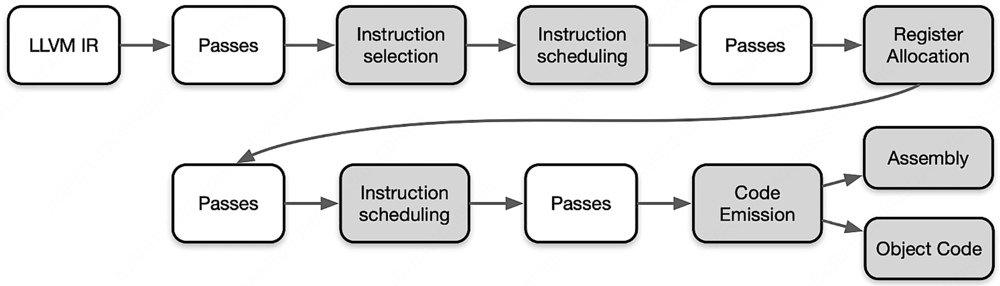
LLVM IR 会变成和后端很接近的一些指令、函数、全局变量和寄存器的具体表示，流水线越向下就越接近实际硬件的目标指令。其中白色的 Pass 是非必要 Pass，灰色的 Pass 是必要 Pass。
下面我们来具体看看这几个关键的 Pass:
指令选择
首先是指令选择（Instruction Selection）：
指令选择的主要任务是将 LLVM IR 转换为 SelectionDAG，再经过合法化和模式匹配，最终生成目标平台特定的 MachineInstr 指令序列，实现从高级语言表示到底层机器指令的转换。
具体来说，指令选择的过程包括以下几个关键步骤：
- 将 LLVM IR 构建为初始的 SelectionDAG，每个 DAG 对应单一基本块内的计算过程，节点表示具体的操作，边表示操作之间的数据流依赖关系。
- 对 DAG 进行合并优化（DAG Combine），完成常量折叠等简单优化。
- 进行合法化（Legalization），将目标平台不支持的操作或数据类型转换为目标平台支持的形式。
- 再次进行 DAG 合并优化，处理合法化引入的新节点。
- 利用基于树的模式匹配算法，将 DAG 节点映射为目标平台的具体机器指令。
- 对选出的指令进行调度，最终发射为 MachineInstr 序列。
指令调度
接下来我们看看指令调度（Instruction Scheduling）：
指令调度旨在通过重新排序程序中的指令来提高计算机程序的性能，分为 Pre-RA 调度和 Post-RA 调度两个阶段，两者以寄存器分配为分界点。寄存器分配是独立于指令调度的阶段，负责将虚拟寄存器映射到物理寄存器，三者共同构成后端代码生成的核心流程。
在前寄存器分配调度（Pre-RA Scheduling）阶段，编译器会对程序中的指令进行排序，同时尝试发现能够并行执行的指令。这种并行执行可以提高程序的吞吐量和执行效率。在现代计算机体系结构中，由于存在多级缓存和流水线等技术，指令调度可以帮助减少指令执行的停顿，并充分利用硬件资源。
一种常见的技术是基于数据依赖性进行指令调度。编译器会分析指令之间的数据依赖关系，然后将独立的指令重排序以并行执行，而不会改变程序的语义。这种优化可以通过重排指令来避免数据冒险（Data Hazard）和控制冒险（Control Hazard），从而提高程序的性能。
在指令调度的过程中，编译器可能会引入一些额外的指令（如填充指令）或调整指令的执行顺序，以最大程度地利用计算资源。例如，可以调整指令的执行顺序，以便在执行整数运算的同时进行浮点运算，或者在内存访问受限时插入其他计算指令。
Pre-RA 调度已经确定了较好的指令顺序，我们需要在这个顺序基础上做实际的寄存器分配（Register Allocation）。
寄存器分配（Register Allocation）是编译器优化的重要步骤之一，其主要任务是将虚拟寄存器分配到有限数量的物理寄存器上，从而减少对内存的访问，提高程序的性能和效率。在 LLVM IR 中，寄存器分配的过程较为特殊，因为 LLVM IR 寄存器集是无限的，直到实施寄存器分配为止。
在寄存器分配中，编译器会尝试将虚拟寄存器映射到物理寄存器上，以便在执行指令时能够直接访问这些寄存器而不必通过内存。然而，由于物理寄存器数量有限，当虚拟寄存器的数量超过物理寄存器时，就需要使用一些策略来处理这种溢出（Spill）情况，将部分寄存器的内容存储到内存中，并在需要时重新加载。
寄存器分配算法可以分为多种类型，常见的包括：
- 贪心寄存器分配（Greedy Register Allocation）：LLVM 默认使用的算法。基于活跃区间（Live Interval）分析寄存器的使用范围，按优先级顺序处理各个活跃区间，并在必要时通过分裂（Split）活跃区间来减少溢出次数，相比简单的线性扫描能获得更高质量的分配结果。
- 迭代寄存器合并（Iterated Register Coalescing）：该算法尝试合并虚拟寄存器，使得原本需要分配到不同物理寄存器的虚拟寄存器可以合并到同一个物理寄存器上。这样可以减少溢出和重加载的次数，提高程序性能。
- 图着色（Graph Coloring）：基于图的寄存器分配算法，将寄存器分配问题转化为图着色问题。通过建立虚拟寄存器之间的冲突图，尝试对图进行着色，从而确定哪些虚拟寄存器可以分配到同一个物理寄存器上，以最小化溢出次数。
寄存器分配在编译器优化中扮演着至关重要的角色，通过有效的寄存器分配算法可以显著提高程序的执行效率和性能。
由于寄存器分配可能引入了新的 load/store 指令（溢出处理）因此还需要重新调度（Post-RA 调度），消除这些新指令带来的流水线停顿。
在后寄存器分配调度（Post-RA Scheduling）阶段，编译器对已经分配了寄存器的机器代码进行进一步优化。此阶段的目标是最大化硬件资源的利用，减少指令执行的停顿，并优化寄存器的使用。具体包括：
- 处理资源冲突：调整指令顺序以避免资源冲突，例如寄存器使用冲突、流水线停顿等。
- 插入填充指令：在必要时插入填充指令（如 NOP 指令）以消除潜在的流水线停顿。
- 优化执行顺序：通过重新排列指令，使得整数运算、浮点运算、内存访问等能够并行执行，从而提高性能。
代码输出
最后我们再来看看代码输出（Code Emission）：
代码输出（Code Emission）是 LLVM 后端的最后一步，负责将已经优化好的 MachineInstr 转换为最终的输出形式 MCInst，输出汇编文本 .s 文件或直接生成二进制目标文件 .o。
经过前面指令选择、Pre-RA 调度、寄存器分配、Post-RA 调度等阶段后，我们得到的 MachineInstr 已经非常接近真实机器指令了，但它仍然携带着一些后端框架层面的"辅助信息"，比如：
- 栈帧引用（
%stack.0.a）—— 还没算出具体的偏移量 - 调试信息、注释
- 一些伪指令（pseudo instruction）—— 不是真实的硬件指令，而是后端框架用来占位的
代码输出阶段要做的就是把这些残留的抽象全部抹掉，变成纯粹的机器指令表示。
MCInst 是 LLVM MC 层（Machine Code Layer）中的核心数据结构，它的结构非常简单：
|
|
可以看到，MCInst 里没有类型信息，没有栈帧引用，没有调试信息——它和真实的机器码已经是一一对应的关系了，区别仅仅在于一个是内存中的对象，一个是二进制编码。
举个具体的例子，对于 int a = 3 中把 3 存到栈上这一步：
| 阶段 | 表示 | 说明 |
|---|---|---|
| MachineInstr | STRWui %w8, %stack.0.a, 0 |
还在用栈帧符号 %stack.0.a |
| MCInst | STR W8, [SP, #8] |
栈帧已经被算成具体偏移量 #8 |
| 二进制机器码 | B9000BE8 |
和 MCInst 一一对应的 32 位编码 |
最终 MCInst 会通过两条路径之一输出为文件：
- MCAsmStreamer：把 MCInst 翻译成汇编文本，写入
.s文件 - MCObjectStreamer：把 MCInst 直接编码为二进制，写入
.o目标文件（LLVM 内置汇编器）
Clang 默认走第二条路径，直接生成 .o 而不经过 .s。这也是 LLVM 和 GCC 的一个区别——GCC 必须先生成 .s 再调用外部汇编器 as，而 LLVM 内置了汇编器，可以一步到位。
学习完了传统的编译器的内容，接下来我们正式领略现代面向机器学习的 AI 编译器了。
AI 编译器
基础介绍
AI 编译器的黄金时代
图灵奖获得者 David Patterson2 在 2019 年 5 月发表了一个名为“计算机架构新的黄金年代”的演讲，他通过回顾自 20 世纪 60 年代以来的计算机架构的发展，来介绍当前的难题与未来的机遇。他预测未来十年计算机架构领域将会迎来下一个黄金时代，就像 20 世纪 80 年代一样。
David Patterson 介绍了从最初诞生的复杂指令计算机到精简指令计算机，再从单核处理器到多核处理器的发展，再到如今随着 AI 的飞速发展，DSA(Domain-specific architectures)迅速崛起，比如 AI 芯片、GPU 芯片以及 NPU 芯片，这些都是 DSA。他认为高级、特定于领域的语言和体系结构，将为计算机架构师带来一个新的黄金时代。
类似的，LLVM 之父 Chris Lattner 在 2021 年 ASPLOS 会议的主题演讲中发表了名为“编译器的黄金时代”的演讲，主要分享了关于编译器的发展现状和未来、编程语言、加速器和摩尔定律失效论，并且讨论业内人士如何去协同创新，推动行业发展，实现处理器运行速度的大幅提升。
Chris Lattner 认为世界出现了越来越多的专属硬件，同时也出现了各种各样的应用。尽管现在硬件越来越多样，硬件生态迅速壮大，但软件还是很难充分利用它们来提高性能。而且如果软硬件协同不到位，性能就会受到巨大影响，那不止是 $10\%$ 左右的浮动。
AI 领域正经历着硬件的爆发式增长，这为 AI 应用的创新和扩展提供了强大的动力。随着各种不同的 AI 硬件的快速涌现，我们正面临一个软件碎片化的时代。软件碎片化意味着需要为不同的 AI 硬件平台开发和维护多种版本的基础软件，这无疑增加了研发和运营的成本。
此外，AI 基础软件碎片化还可能导致用户体验的不一致，因为不同硬件上运行的基础软件可能在性能和功能上存在差异。这种不一致性不仅增加了用户的学习成本，也可能影响用户对品牌和产品的忠诚度。
最终，软件碎片化的问题还可能反噬硬件行业本身。如果硬件制造商无法提供兼容和优化良好的软件解决方案，那么他们在市场上的竞争力将受到削弱。用户可能会选择那些能够提供更好软件支持的硬件产品，就像截至到目前为止大部分研究者仍然大量地使用英伟达的 GPU，而不是 DSA 架构的 AI 芯片。
因此，硬件行业的参与者需要认识到 AI 基础软件碎片化的潜在风险，并采取措施来缓解这一问题。这可能包括开发更加通用和可移植的软件架构，或者与软件开发商合作，共同提供跨平台的解决方案。
否则随着各种不同 AI 硬件的爆发式增长，会逐渐导致基础软件的碎片化，这种碎片化的发展带来了巨大成本，也会反噬 AI 硬件行业。
回顾历史，自 90 年代以来，GCC 编译器的出现极大地解决了当时编译体系生态的碎片化问题，为软件开发带来了统一的标准和便利。随后，LLVM 的诞生进一步推动了整个编译器领域的发展，为不同硬件平台提供了强大的编译支持。
在硬件领域，不同的芯片厂商纷纷推出了自家的芯片。为了充分发挥这些芯片的性能，必须有与之相匹配的编译器，将高级语言转化为机器码，让芯片的能力得到充分利用。
当前，AI 编译器的发展阶段似乎回到了 GCC 出现之前的时代。每家 AI 芯片公司都在推出自己的 AI 编译器、框架甚至软件栈，市场上出现了极度碎片化的现象。
Chris Lattner 预见，未来十年将是 AI 编译器快速发展的十年。随着技术的进步和市场的整合，新的技术将会出现，重新塑造编译器领域的格局。我们将迎来一个新的"大一统"时代，编译器领域将会经历一次全面的革新和整合。
AI 编译器 VS 传统编译器
大家可能会想： AI 程序和我们普通的程序，本质上最终都是通过指令运算，传统编译器也完全可以编译 AI 代码啊，那为什么要出现 AI 编译器？也就是 AI 编译器存在的意义究竟是什么？
关键在于传统编译器不理解 AI 计算语义。
还是以我们的“老熟人3”来举例：
|
|
传统编译器看到这段代码，它只会局限于从语法层面来看待——这里有循环嵌套，我们可以：
- 循环展开
- 向量化（SIMD）
- 寄存器分配
- 基本的 cache 优化
它不知道的是，从语义层面来看，这是一个矩阵乘法！
- 可以用 Tensor Core 专用硬件
- 可以和后面的 ReLU 融合成一个 kernel
- 还可以用 Flash Attention 重写整个计算方式
AI 编译器的核心价值就在于：不是做传统编译器做不到的事，而是做传统编译器不知道该做的事。传统编译器完全可以编译 AI 代码，但它不理解计算图的语义，无法做算子融合、Tensor Core 利用、全局内存优化这些高层优化，性能差距可能几十上百倍。
这里可能有人会问：那为什么不把这些 AI 编译器独有的优化也融合到传统编译器里？难道普通的程序代码不能也这么优化吗？
本质上还是因为优化需要语义，语义需要抽象层。传统代码在编译过程中丢失了高层语义，而AI 框架通过保留计算图级别的语义信息，使得高层优化成为可能。
比如刚刚的矩阵乘法，AI 框架（如 PyTorch）则会写成：
C = torch.matmul(A, B)，这就附带了矩阵乘法的语义，而不是传统编译器只能看出来是三层循环。AI 编译器为了支持现在 ML 程序中出现的大量独特的语义，提供了 AI 框架这一新的抽象层，然后对 AI 框架输出的计算图做优化。
因此传统编译器的使命是简化编程： 通过编译器，人类可以使用更容易理解的高级的语言来编程，而将代码转换成机器实际执行的机器码的过程，则被编译器给抽象了。
而现代的 AI 编译器的使命则是优化性能，确保神经网络模型在硬件上高效运行。降低编程难度虽然也是 AI 编译器的目标之一，但相较于性能优化，它退居次要位置。
所以 AI 编译器和传统编译器也就产生了很多异同：
- 目标相同：AI 编译器与传统编译器都是通过自动化的方式进行程序优化和代码生成，从而节省大量的人力对不同底层硬件的手动优化。
- 优化方式类似：在编译优化层，AI 编译器与传统编译器都是通过统一 IR 执行不同的 Pass 进行优化，从而提高程序执行时的性能。
- 软件栈结构类似：它们都分成前端、优化、后端三段式，通过 IR 解耦前端和后端使得可以进行模块化表示。
- AI 编译器依赖传统编译器：AI 编译器对 Graph IR 进行优化后，将优化后的 IR 转化成传统编译器 IR，最后依赖传统编译器进行机器码生成。因为传统编译器经过几十年的发展已经趋于稳定，所以 AI 编译器的角色更像是对传统编译器的一种补充。
在下面的图中，左侧展示了传统编译器的软件栈结构，右侧则呈现了 AI 编译器的架构。通过对比这两部分，我们可以清晰地辨识出它们之间的不同：

传统编译器的前端专注于对高级编程语言进行深入的语义分析、语法分析和词法分析，将源代码转化为中间表示（IR）。在中间阶段，编译器执行一系列优化 Pass，专门针对高级语言代码进行性能提升。而在后端，编译器负责处理代码的具体布局、寄存器分配等任务。
相比之下，AI 编译器的架构则有显著的不同。它的前端主要负责将神经网络的 API 表达为计算图，这一过程涉及到模型的构建和转换。在中间优化阶段，AI 编译器专注于图算融合、算子融合、自动微分和并行切分等特定优化技术。后端则根据目标硬件平台，对 Kernel 进行定制化优化，确保代码在不同硬件上都能高效运行。在某些情况下，如 CPU 或 TPU 等芯片，AI 编译器甚至可能利用类似 LLVM 这样的传统编译器技术。AI 编译器在很多方面是站在传统编译器的肩膀上，它们之间形成了一种互补和协同的关系。
这里我们还需要区分两个关键概念：算子和 Kernel。
大家应该经常看到这两个名词，而且似乎发现它们的含义非常相似，都代表一种具体的运算操作，那么它们的区别到底是什么呢？
这其实是从不同层的视角对同样事情的不同称呼。在 AI 框架中，算子是执行具体计算的操作单元，例如矩阵乘法、卷积、激活函数等，面向算法工程师，强调的是数学语义（做什么）。而 Kernel 通常指在底层硬件上执行特定计算任务的函数或代码块，由 AI 编译器层所关注，强调的是硬件实现（怎么做）。
值得注意的是，两者并非简单的一对一关系。同一个算子（例如 Conv2d）根据输入大小、硬件型号的不同，可能对应完全不同的 Kernel 实现；反过来，多个算子（如 Conv → BatchNorm → ReLU）也可以被编译器融合成一个 Kernel，减少中间结果的显存读写，从而大幅提升性能。
手写 Kernel 意味着开发者直接编写硬件级代码（如 CUDA），针对特定硬件架构的内存层次结构、线程组织等做极致优化，通常比框架自动生成的代码性能更高，但需要深入理解目标硬件的编程模型。
AI 编译器架构
首先我们来阅读一篇入门深度学习编译器必读的综述：The Deep Learning Compiler: A Comprehensive Survey
后续还可以继续深入阅读：
资料 说明 TVM: An Automated End-to-End Optimizing Compiler for Deep Learning 陈天奇，DL编译器的奠基之作，把 kernel optimization 变成搜索问题 Halide: A Language and Compiler for Optimizing Parallelism 计算和调度分离的思想，影响深远，是 TVM 的思想来源 MLIR: A Compiler Infrastructure for the End of Moore’s Law Google，现代DL编译器基础设施 Triton: An Intermediate Language for GPU Kernels OpenAI，现在非常火，“编译器生成 kernel” 替代手写 CUDA XLA: Compiling Machine Learning for Peak Performance Google，TF背后的编译器
接下来我们看看现有 AI 编译器的整体架构：
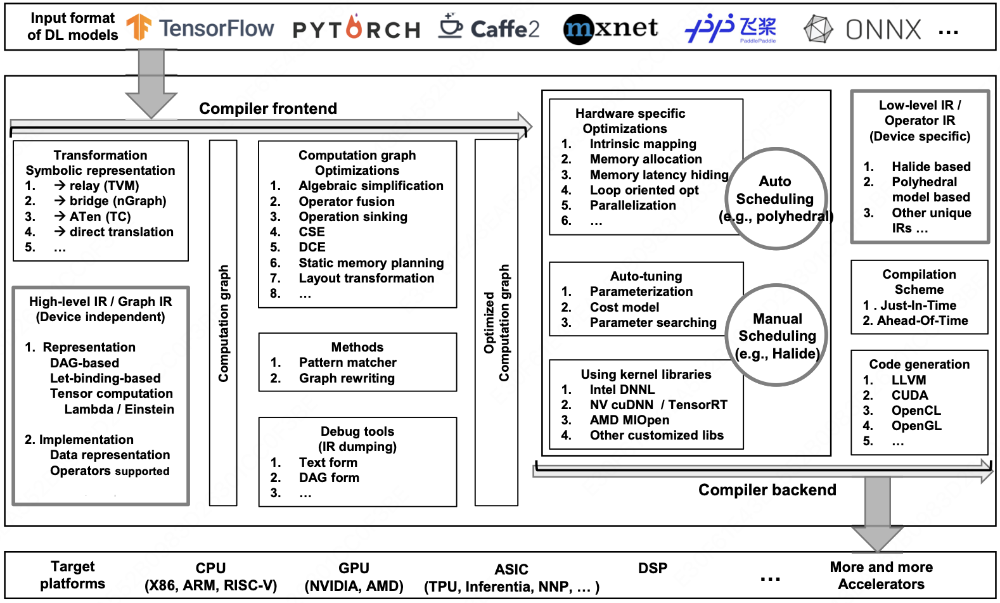
和传统编译器一样，AI 编译器也是分为编译器前端（Compiler Frontend）和编译器后端（Compiler Backend）两个主要部分。
编译器前端（Compiler Frontend）主要负责接收和处理来自不同 AI 框架的模型，并将其转换为通用的中间表示（IR），进行初步的硬件无关的优化。
编译器前端的组成展示在上图左侧部分：
- 输入的神经网络模型格式可以来自多种框架（如 TensorFlow、PyTorch 等）；
- 这些模型通过符号表示的转换（如 TVM、nGraph 等）生成计算图；
- 高级 IR/图 IR（设备无关）包含了 DAG（有向无环图）和基于 let-binding 的表示形式以及张量计算；
- 计算图先经过多种优化，如代数简化、操作融合、操作下沉、公共子表达式消除（CSE）、死代码消除（DCE）和静态内存规划等，得到初步优化的计算图；随后通过模式匹配和图重写等方法进一步优化，最终生成优化后的计算图；
- 同时，编译器前端也提供了调试工具（如 IR dumping）可以以文本或 DAG 形式呈现。
编译器后端（Compiler Backend）负责将优化后的计算图转换为特定硬件平台的低层次表示，并进行硬件相关优化和代码生成。
编译器后端的组成展示在上图右侧部分：
- 首先进行硬件特定的优化，包括内在映射、内存分配、内存延迟隐藏、循环优化、并行化等；
- 这些优化通过自动调度（如多面体模型）和手动调度（如 Halide）进行；
- 自动调优模块包含参数化、成本模型和参数搜索，旨在进一步优化性能；
- 后端还利用内核库（如 Intel DNNL、NV cuDNN/TensorRT、AMD MIOpen 等）来提高效率；
- 低级 IR/操作符 IR（设备相关）采用 Halide、多面体模型等独特的 IR 实现；
- 编译方案支持即时（Just-In-Time）和提前（Ahead-Of-Time）编译；
- 最终，代码生成模块将生成 LLVM、CUDA、OpenCL、OpenGL 等代码，以支持各种目标平台，包括 CPU（X86、ARM、RISC-V）、GPU（英伟达、AMD）、ASIC（TPU、Inferentia、NNP 等）和 DSP 等，从而适配越来越多的加速器。
前端优化
具体的优化涉及到非常多的具体的 AI 框架的知识，建议先补充 AI 框架的内容再回来学习 AI 编译器底层是怎么优化的？
后端优化
大模型训练与推理系统架构
AI 框架
计算图
计算图这个名词相信大家经常听到，似乎无处不在，但是很多人还是不知道它具体是什么？
计算图在某些场景里也叫数据流图
大模型训练
大模型推理
SGLang
一个专门用来学习 SGLang 框架的简化版本： nano-sglang